library(dplyr)
library(ggplot2)
library(tidyverse)
library(plotly) # Used for interactive plots
library(kableExtra) # Used for pretty printing (kable_styling)
library(ggridges) # Used for plotting distributions
library(naniar) # Used to visualize missingness
library(patchwork) # Used to chain ggplots together
library(gridExtra) # Used to plot ggplots side by side
library(corrplot) # Used for correlation matrix
library(caret) # Used for K-fold cross validation and machine learning
library(bestNormalize) # Used to find best transformation
library(olsrr) # used for backwards elimination model.
library(car) # Used for influenceplot functionPredictive Modelling
Advanced Data Analysis - Project 3
Introduction
The aim of the current study is to investigate whether MRI image features extracted from baseline kidney images can enhance the prediction of disease progression in young Autosomal Dominant Polycystic Kidney Disease (ADPKD) patients. This study is important because recent literature has demonstrated the inclusion of MRI image features improves the prognostic accuracy of models in adults, but this has not yet been demonstrated in children. Improving prediction models could greatly assist in diagnosing and predicting kidney disease outcomes in children, which is more challenging than in adults and could lead to improved treatment.
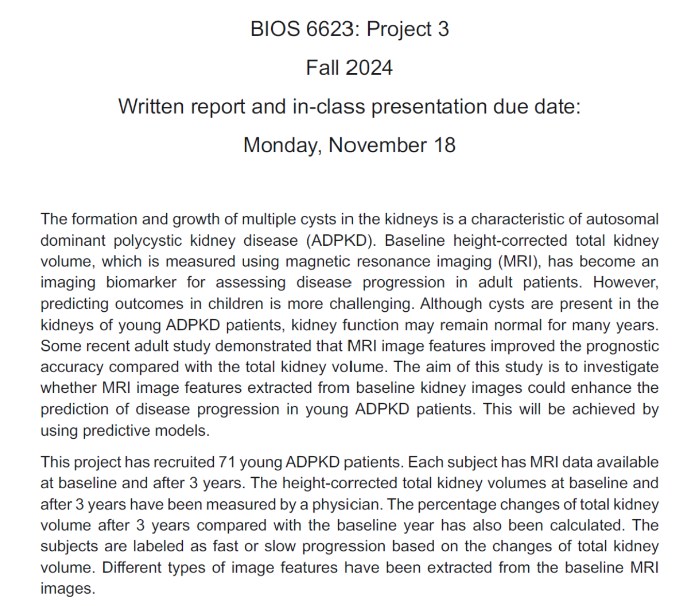
Task One

Task Two

Clinical Hypotheses
The two clinical hypotheses for this study are that including MRI image features will improve model performance compared to using baseline kidney volume alone in models predicting
Percentage change of total kidney volume growth
Classification of a patient as having fast or slow progression of the disease.
Background
Here we will review background information on the methodology and variables provided in this data set.
Gabor Transform
What is it
The Gabor Transform, named after Dennis Gabor, is a powerful technique for analyzing the texture of MRI images. By convolving the image with a Gabor filter, it becomes possible to discriminate between features based on intensity differences. This allows the target region and background to be differentiated if they possess distinct features, as they will exhibit different intensity levels. Moreover, the Gabor Transform has tunable parameters, such as the frequency of the sinusoidal wave, which can be adjusted to extract specific textures from the images. Higher frequencies are ideal for capturing fine textures, while lower frequencies are better suited for coarse textures.
How it Works
The Gabor Filter first applies a Gaussian Envelope to focus on a small region of the image. It then applies a sinusoidal wave that oscillates at a specific frequency and captures the variation in intensities at that frequency and orientation within that region.
Example of Gabor Transform

Image Features Provided by the Gabor Transform
In general, Gabor functions can easily extract features of:
Spatial Frequency (e.g. how often pixel intensity changes in a given area)
Density (e.g. concentration of features within a certain area)
Orientation (e.g. Textures or edges at 0°, 45°, 90°, 135°)
Phase (e.g. alignment/distance of features)
Energy (e.g. overall intensity)
Gray Level Co-Occurrence Matrix
What is it
The Gray Level Co-Occurrence Matrix (GLCM) is another powerful tool for extracting texture features from an MRI image. GLCM works under the assumption that the textural information in an image is contained in the “average” spatial relationship that the gray tones in the image have to each other. For example, when a small patch of the picture has little variation of features, the dominant property is tone; When a small patch of a picture has high variation, the dominant property is texture (3).
How it Works
GLCM examines the spatial relationship between pairs of pixels in an image and calculates how often pairs of pixel values occur at a specified distance and orientation. It does this by computing a set of gray-tone spacial-dependence matrices for various angular relationships and distances between neighboring resolution cell pairs on the image (3).
Example of GLCM
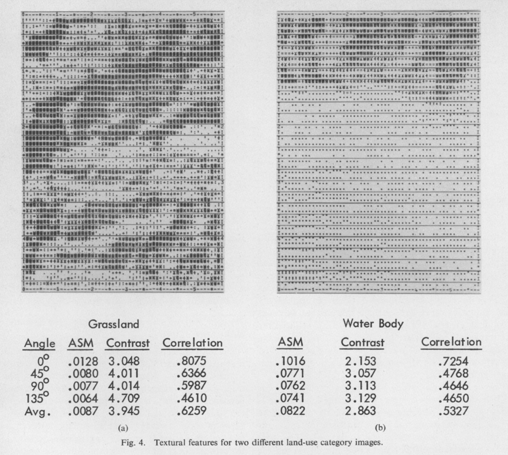
Image Features Provided by GLCM
In general, GLCM provides information on the following features:
Homogeneity
Linear Structure
Contrast
Number and Nature of Boundaries
Complexity of the Image
Local Binary Pattern
What is it
The Local Binary Pattern (LBP) is a third powerful method for extracting texture features from an image. An important and fundamental property of texture is how uniform the patterns are, and LBP captures this by detecting these uniform patterns in circular neighborhoods at any rotation and spatial resolution. LBP is rotation invariant, meaning it does not matter what rotation the image is at; it will always extract very similar features) (4).
How it Works
LBP works by comparing the intensity of a central pixel with its neighboring pixels and encoding this relationship into a binary pattern. For each neighbor, if it’s intensity is greater or equal to the central pixel, it gets assigned a 1 (otherwise a 0). The binary values of all neighbors are then concatenated to form a binary number, and this number is converted into a decimal that represent the LBP for the central pixel (4).
Example of LBP

Code Information

Image Features Provided by the LBP
In general, the LBP provides image features on:
Uniformity
Local Contrast
Texture Description
Spatial Patterns
Gray Level Distribution
Method
Study Design
The investigators recruited 71 young patients with ADPKD and collected MRI data at baseline and after 3 years. Additionally, the height corrected kidney volume for each patient was collected at baseline and 3 years by a physician, and the percentage change calculated. Patients were classified as having slow or fast progression of the disease based on this percentage change. Image features were extracted from the baseline MRI images including 2 image features on kidney geometric information, 5 features based on Gabor transform, 2 features based on gray level co-occurrence matrix, 5 features based on image textures, and 5 features based on local binary pattern.
Statistical Hypotheses
A linear regression model predicting percentage change of total kidney volume growth including MRI image features and baseline kidney volume will have better performance than a model with baseline kidney volume alone, as determined by specificity, sensitivity, PPV, NPV, accuracy, and AUC.
A logistic regression model predicting classification of disease progression as slow or fast including MRI image features and baseline kidney volume will have better performance than a model with baseline kidney volume alone, as determined by specificity, sensitivity, PPV, NPV, accuracy, and AUC.
Data Preparation
Load Packages
Read .CSV
# Read in data
data <- read_csv("C:/Users/sviea/Documents/Portfolio/Project_3_Predictive_Modelling/Project_3_R/Raw_Data/Project3_data.csv")Rows: 71 Columns: 24
── Column specification ────────────────────────────────────────────────────────
Delimiter: ","
dbl (24): Subject ID, geom1, geom2, gabor1, gabor2, gabor3, gabor4, gabor5, ...
ℹ Use `spec()` to retrieve the full column specification for this data.
ℹ Specify the column types or set `show_col_types = FALSE` to quiet this message.Examine Data Set
# Examine data
pretty_print(head(data))| Subject ID | geom1 | geom2 | gabor1 | gabor2 | gabor3 | gabor4 | gabor5 | glcm1 | glcm2 | txti1 | txti2 | txti3 | txti4 | txti5 | lbp1 | lbp2 | lbp3 | lbp4 | lbp5 | tkvht_base | tkvht_visit2 | progression | tkvht_change |
|---|---|---|---|---|---|---|---|---|---|---|---|---|---|---|---|---|---|---|---|---|---|---|---|
| 1 | 1.071923 | 1.149019 | -0.0292053 | -0.0798071 | 0.0023308 | 0.0008529 | 0.0063692 | 405.57142 | 164488.179 | -4.401442 | -12.085150 | 53.192089 | 19.372693 | 146.050849 | -0.5211817 | 0.0812259 | -0.0423335 | 0.2716304 | 0.0065977 | 435 | 585 | 1 | 11.44 |
| 2 | 54.031476 | 2919.400411 | -0.0499853 | -0.1266310 | 0.0063297 | 0.0024985 | 0.0160354 | -580.93865 | 337489.719 | 3.595325 | -1.991768 | -7.161054 | 12.926362 | 3.967141 | -0.5572404 | -0.4665611 | 0.2599867 | 0.3105169 | 0.2176792 | 555 | 595 | 0 | 2.42 |
| 3 | -32.024389 | 1025.561486 | -0.0152715 | 0.0424398 | -0.0006481 | 0.0002332 | 0.0018011 | -1037.25839 | 1075904.968 | 25.367336 | -5.308749 | -134.668822 | 643.501717 | 28.182818 | -0.2515471 | 0.6778935 | -0.1705221 | 0.0632760 | 0.4595395 | 191 | 249 | 1 | 10.08 |
| 4 | -42.832485 | 1834.621814 | -0.0153948 | 0.0435459 | -0.0006704 | 0.0002370 | 0.0018962 | -1018.07892 | 1036484.679 | 25.518531 | -5.561043 | -141.909649 | 651.195432 | 30.925199 | -0.2463696 | 0.6684585 | -0.1646879 | 0.0606980 | 0.4468368 | 334 | 498 | 1 | 16.47 |
| 5 | -10.637344 | 113.153096 | 0.1630437 | 0.0797533 | 0.0130033 | 0.0265832 | 0.0063606 | 64.64083 | 4178.437 | 2.446875 | -6.297954 | -15.410304 | 5.987195 | 39.664227 | -0.5663138 | 0.2676994 | -0.1516019 | 0.3207114 | 0.0716630 | 263 | 311 | 0 | 6.14 |
| 6 | 71.079477 | 5052.292049 | -0.0824492 | -0.1101542 | 0.0090821 | 0.0067979 | 0.0121340 | -1459.90430 | 2131320.550 | 2.432428 | -6.506258 | -15.826002 | 5.916703 | 42.331398 | -1.1999136 | -0.1108972 | 0.1330671 | 1.4397927 | 0.0122982 | 609 | 793 | 1 | 10.09 |
# Check data types
glimpse(data)Rows: 71
Columns: 24
$ `Subject ID` <dbl> 1, 2, 3, 4, 5, 6, 7, 8, 9, 10, 11, 12, 13, 14, 15, 16, 17…
$ geom1 <dbl> 1.071923, 54.031476, -32.024389, -42.832485, -10.637344, …
$ geom2 <dbl> 1.149019, 2919.400411, 1025.561486, 1834.621814, 113.1530…
$ gabor1 <dbl> -0.029205293, -0.049985252, -0.015271484, -0.015394838, 0…
$ gabor2 <dbl> -0.079807149, -0.126631032, 0.042439800, 0.043545875, 0.0…
$ gabor3 <dbl> 0.002330791, 0.006329684, -0.000648119, -0.000670382, 0.0…
$ gabor4 <dbl> 0.000852949, 0.002498525, 0.000233218, 0.000237001, 0.026…
$ gabor5 <dbl> 0.006369181, 0.016035418, 0.001801137, 0.001896243, 0.006…
$ glcm1 <dbl> 405.57142, -580.93865, -1037.25839, -1018.07892, 64.64083…
$ glcm2 <dbl> 164488.179, 337489.719, 1075904.968, 1036484.679, 4178.43…
$ txti1 <dbl> -4.4014422, 3.5953250, 25.3673356, 25.5185311, 2.4468746,…
$ txti2 <dbl> -12.0851499, -1.9917682, -5.3087492, -5.5610430, -6.29795…
$ txti3 <dbl> 53.192089, -7.161054, -134.668822, -141.909649, -15.41030…
$ txti4 <dbl> 19.3726934, 12.9263620, 643.5017174, 651.1954318, 5.98719…
$ txti5 <dbl> 146.0508494, 3.9671407, 28.1828179, 30.9251993, 39.664226…
$ lbp1 <dbl> -0.52118174, -0.55724044, -0.25154711, -0.24636960, -0.56…
$ lbp2 <dbl> 0.08122595, -0.46656106, 0.67789345, 0.66845853, 0.267699…
$ lbp3 <dbl> -0.042333481, 0.259986692, -0.170522142, -0.164687860, -0…
$ lbp4 <dbl> 0.271630410, 0.310516908, 0.063275951, 0.060697979, 0.320…
$ lbp5 <dbl> 0.006597654, 0.217679225, 0.459539531, 0.446836807, 0.071…
$ tkvht_base <dbl> 435, 555, 191, 334, 263, 609, 149, 580, 338, 288, 281, 57…
$ tkvht_visit2 <dbl> 585, 595, 249, 498, 311, 793, 198, 657, 362, 306, 266, 95…
$ progression <dbl> 1, 0, 1, 1, 0, 1, 1, 0, 0, 0, 0, 1, 1, 1, 0, 1, 1, 0, 1, …
$ tkvht_change <dbl> 11.44, 2.42, 10.08, 16.47, 6.14, 10.09, 10.91, 4.40, 2.30…Create Factors
Everything is appropriately coded as a double.
Let’s just convert progression into a factor that contains the levels for “slow” or “fast and we’re good to go. We will also rename some variables for convenience.
# Convert progression into a factor
data <- data |>
mutate(progression = factor(progression,
levels = c(0,1),
labels = c("Slow", "Fast")))
# Rename Subject ID and kidney volume variables so they are easier to access
data <- data |>
rename(Subject_ID = `Subject ID`,
kidvol_base = tkvht_base,
kidvol_visit2 = tkvht_visit2,
kidvol_change = tkvht_change)
# Double check data types
glimpse(data)Rows: 71
Columns: 24
$ Subject_ID <dbl> 1, 2, 3, 4, 5, 6, 7, 8, 9, 10, 11, 12, 13, 14, 15, 16, 1…
$ geom1 <dbl> 1.071923, 54.031476, -32.024389, -42.832485, -10.637344,…
$ geom2 <dbl> 1.149019, 2919.400411, 1025.561486, 1834.621814, 113.153…
$ gabor1 <dbl> -0.029205293, -0.049985252, -0.015271484, -0.015394838, …
$ gabor2 <dbl> -0.079807149, -0.126631032, 0.042439800, 0.043545875, 0.…
$ gabor3 <dbl> 0.002330791, 0.006329684, -0.000648119, -0.000670382, 0.…
$ gabor4 <dbl> 0.000852949, 0.002498525, 0.000233218, 0.000237001, 0.02…
$ gabor5 <dbl> 0.006369181, 0.016035418, 0.001801137, 0.001896243, 0.00…
$ glcm1 <dbl> 405.57142, -580.93865, -1037.25839, -1018.07892, 64.6408…
$ glcm2 <dbl> 164488.179, 337489.719, 1075904.968, 1036484.679, 4178.4…
$ txti1 <dbl> -4.4014422, 3.5953250, 25.3673356, 25.5185311, 2.4468746…
$ txti2 <dbl> -12.0851499, -1.9917682, -5.3087492, -5.5610430, -6.2979…
$ txti3 <dbl> 53.192089, -7.161054, -134.668822, -141.909649, -15.4103…
$ txti4 <dbl> 19.3726934, 12.9263620, 643.5017174, 651.1954318, 5.9871…
$ txti5 <dbl> 146.0508494, 3.9671407, 28.1828179, 30.9251993, 39.66422…
$ lbp1 <dbl> -0.52118174, -0.55724044, -0.25154711, -0.24636960, -0.5…
$ lbp2 <dbl> 0.08122595, -0.46656106, 0.67789345, 0.66845853, 0.26769…
$ lbp3 <dbl> -0.042333481, 0.259986692, -0.170522142, -0.164687860, -…
$ lbp4 <dbl> 0.271630410, 0.310516908, 0.063275951, 0.060697979, 0.32…
$ lbp5 <dbl> 0.006597654, 0.217679225, 0.459539531, 0.446836807, 0.07…
$ kidvol_base <dbl> 435, 555, 191, 334, 263, 609, 149, 580, 338, 288, 281, 5…
$ kidvol_visit2 <dbl> 585, 595, 249, 498, 311, 793, 198, 657, 362, 306, 266, 9…
$ progression <fct> Fast, Slow, Fast, Fast, Slow, Fast, Fast, Slow, Slow, Sl…
$ kidvol_change <dbl> 11.44, 2.42, 10.08, 16.47, 6.14, 10.09, 10.91, 4.40, 2.3…Summary
Our data set consists of:
- 71 patients
- 19 MRI image features
- 4 kidney volume variables
Missingness
# Examine missingness
gg_miss_var(data)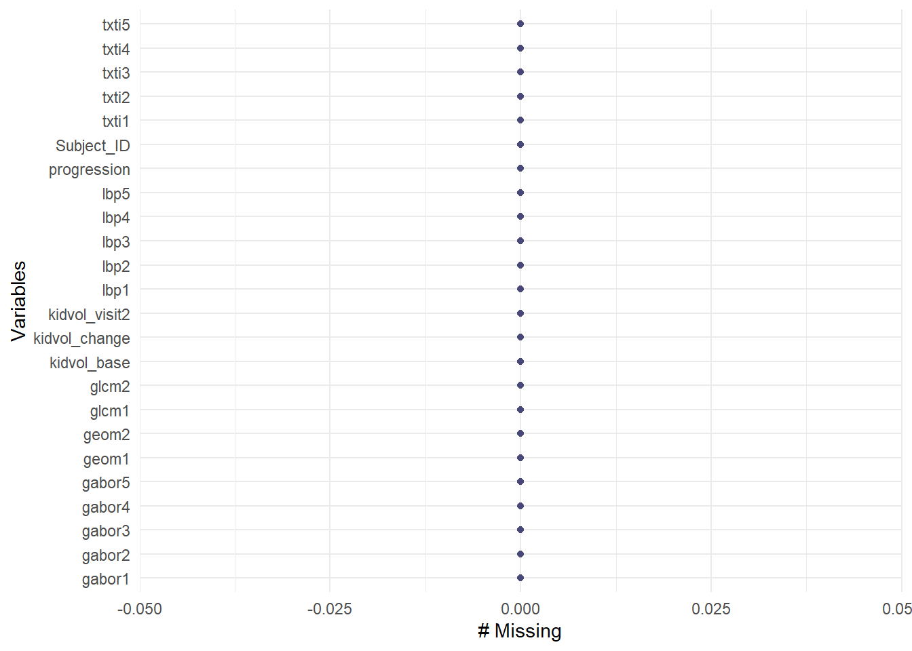
# Examine missingness percents
vis_miss(data)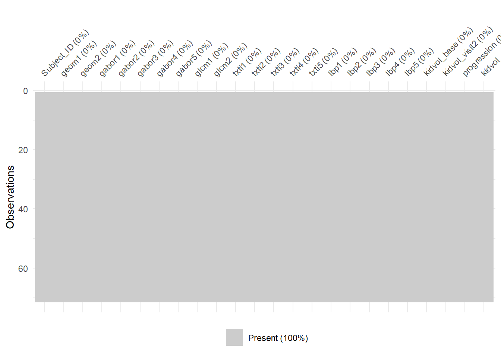
We have 0 missing values!
Data Split
Background
We have an N of 71, which is notably small.
In order to increase the power of the study, we will perform a 5-fold cross validation. Thus, all patients will be in both the training and validation sets, providing a comprehensive evaluation.
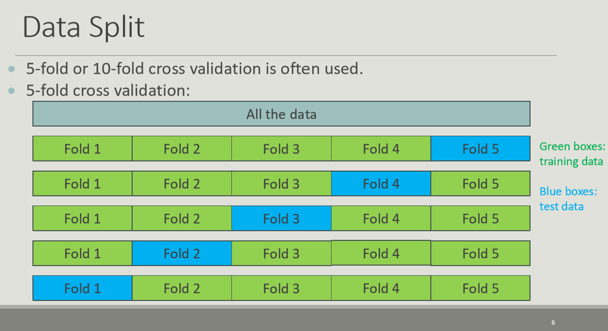
Perform the Split
To begin with, we will divide our data set into 5 even folds.
First we randomly shuffle the data so it is not organized by Subject ID
# Set seed for reproducibility
set.seed(123)
# Shuffle the rows
data <- data |> slice_sample(n = nrow(data))Then we create 5-folds of our data set.
# Create labels for Folds1-5
data |>
mutate(fold_number = rep(c("Fold1", "Fold2", "Fold3", "Fold4", "Fold5"), length.out = n())) -> data
#### Create separate data frames for each fold
# Create Fold 1
data1_train <- data |>
filter(fold_number != "Fold1")
data1_test <- data |>
filter(fold_number == "Fold1")
# Create fold 2
data2_train <- data |>
filter(fold_number != "Fold2")
data2_test <- data |>
filter(fold_number == "Fold2")
# Create fold 3
data3_train <- data |>
filter(fold_number != "Fold3")
data3_test <- data |>
filter(fold_number == "Fold3")
# Create fold 4
data4_train <- data |>
filter(fold_number != "Fold4")
data4_test <- data |>
filter(fold_number == "Fold4")
# Create fold 5
data5_train <- data |>
filter(fold_number != "Fold5")
data5_test <- data |>
filter(fold_number == "Fold5")And examine Fold1 and ensure the dimensions check out.
# Check dimensions of Fold1
dim(data1_train)[1] 56 25# Check dimensions of Fold1
dim(data1_test)[1] 15 25# Check for any overlapping patients
inner_join(data1_train, data1_test, by = "Subject_ID")# A tibble: 0 × 49
# ℹ 49 variables: Subject_ID <dbl>, geom1.x <dbl>, geom2.x <dbl>,
# gabor1.x <dbl>, gabor2.x <dbl>, gabor3.x <dbl>, gabor4.x <dbl>,
# gabor5.x <dbl>, glcm1.x <dbl>, glcm2.x <dbl>, txti1.x <dbl>, txti2.x <dbl>,
# txti3.x <dbl>, txti4.x <dbl>, txti5.x <dbl>, lbp1.x <dbl>, lbp2.x <dbl>,
# lbp3.x <dbl>, lbp4.x <dbl>, lbp5.x <dbl>, kidvol_base.x <dbl>,
# kidvol_visit2.x <dbl>, progression.x <fct>, kidvol_change.x <dbl>,
# fold_number.x <chr>, geom1.y <dbl>, geom2.y <dbl>, gabor1.y <dbl>, …We have 56 patients in the fold 1 training set, and 15 in the test set, with no overlapping IDs. Perfect!
Data Examination
Examining the distributions of the entire data set before splitting can cause subtle biases. For example, transformations or decisions based on the entire data set might inadvertently incorporate patterns from the test data into the training process!
We essentially want to mimic real world situations, where we would not know the distributions of our test set prior to analysis.
Thus, we will perform the initial examination of the distribution of our variables, using Fold1_train.
Univariate Distributions
Outcome Variables
Baseline Kidney Volume
# Visualize baseline kidney volume
ggplot(data1_train, aes(x = kidvol_base)) +
geom_histogram() +
theme_minimal() +
labs(title = "Histogram for Baseline Kidney Volume",
x = "Baseline Kidney Volume",
y = "Count")`stat_bin()` using `bins = 30`. Pick better value with `binwidth`.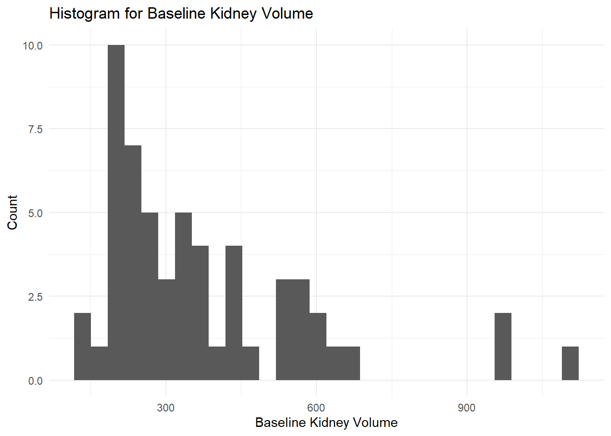
## QQ Plot
ggplot(data1_train, aes(sample = kidvol_base)) +
geom_qq() +
geom_qq_line() +
theme_minimal() +
labs(title = "Histogram for Baseline Kidney Volume",
x = "Baseline Kidney Volume",
y = "Count")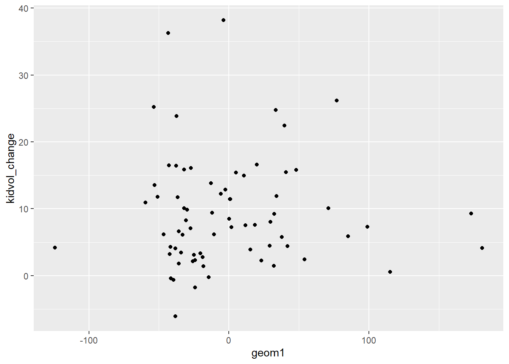
Kidney volume at baseline appears to be logarithmic.
# Visualize baseline kidney volume
ggplot(data1_train, aes(x = log(kidvol_base))) +
geom_histogram() +
theme_minimal() +
labs(title = "Histogram forLog Baseline Kidney Volume",
x = "Baseline Kidney Volume",
y = "Count")`stat_bin()` using `bins = 30`. Pick better value with `binwidth`.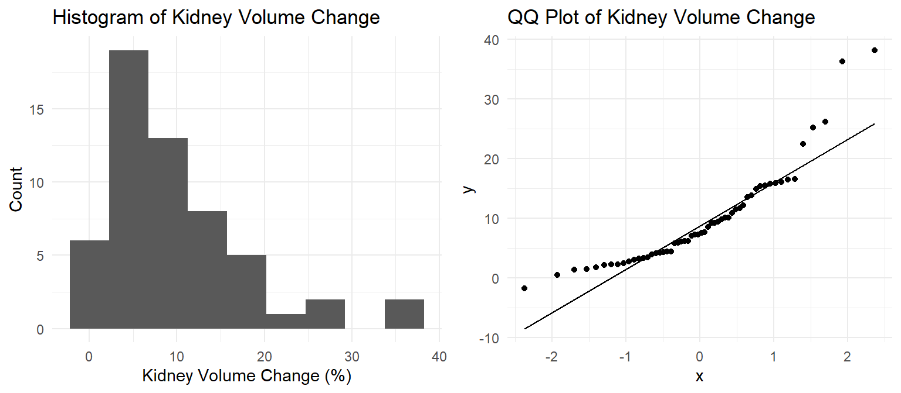
# QQ Plot
ggplot(data1_train, aes(sample = log(kidvol_base))) +
geom_qq() +
geom_qq_line() +
theme_minimal() +
labs(title = "Histogram for Log Baseline Kidney Volume",
x = "Baseline Kidney Volume",
y = "Count")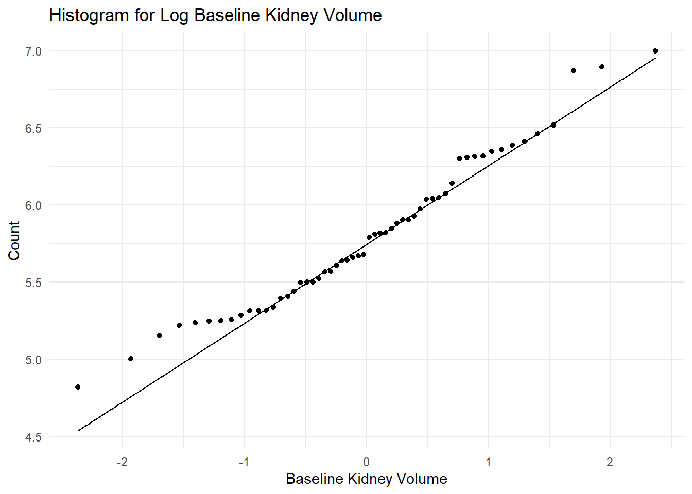
# Create variable
data1_train <- data1_train |>
mutate(kidvol_base_log = log(kidvol_base))kidvol_base is normally distributed approximately, after log transform and this variable will be used going forward.
Percent Change in Kidney Volume
# Create histogram
hist_plot <- ggplot(data1_train, aes(x = kidvol_change)) +
geom_histogram(binwidth = 4.5) +
theme_minimal() +
labs(title = "Histogram of Kidney Volume Change",
y = "Count",
x = "Kidney Volume Change (%)")
# Create qqplot
qq_plot <- ggplot(data1_train, aes(sample = kidvol_change)) +
geom_qq() +
geom_qq_line() +
theme_minimal() +
labs(title = "QQ Plot of Kidney Volume Change")
# Plot side by side
grid.arrange(hist_plot, qq_plot, ncol = 2)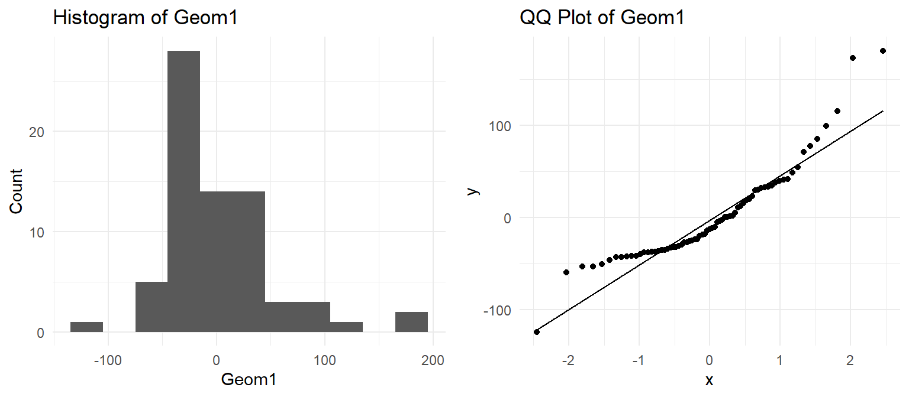
kidvol_change is not quite normally distributed.
Log Transform
Let’s check if a logarithmic or sqrt transformation will be better.
# Use bestNormalize R package to select the best transformation
BNObject <- bestNormalize(data1_train$kidvol_change)
BNObjectBest Normalizing transformation with 56 Observations
Estimated Normality Statistics (Pearson P / df, lower => more normal):
- arcsinh(x): 1.406
- Center+scale: 2.0927
- Double Reversed Log_b(x+a): 2.7753
- Exp(x): 7.088
- Log_b(x+a): 1.4253
- orderNorm (ORQ): 1.3587
- sqrt(x + a): 1.4447
- Yeo-Johnson: 1.6673
Estimation method: Out-of-sample via CV with 10 folds and 5 repeats
Based off these, bestNormalize chose:
orderNorm Transformation with 56 nonmissing obs and no ties
- Original quantiles:
0% 25% 50% 75% 100%
-1.750 3.805 7.405 13.590 38.190 # Create histogram
hist_plot <- ggplot(data1_train, aes(x = log(kidvol_change))) +
geom_histogram(binwidth = 0.5) +
theme_minimal() +
labs(title = "Histogram of Log Kidney Volume Change",
y = "Count",
x = "Kidney Volume Change (%)")
# Create qqplot
qq_plot <- ggplot(data1_train, aes(sample = log(kidvol_change))) +
geom_qq() +
geom_qq_line() +
theme_minimal() +
labs(title = "QQ Plot of Log Kidney Volume Change")
# Plot side by side
grid.arrange(hist_plot, qq_plot, ncol = 2)Warning in log(kidvol_change): NaNs producedWarning: Removed 1 row containing non-finite outside the scale range
(`stat_bin()`).Warning in log(kidvol_change): NaNs produced
Warning in log(kidvol_change): NaNs producedWarning: Removed 1 row containing non-finite outside the scale range
(`stat_qq()`).Warning: Removed 1 row containing non-finite outside the scale range
(`stat_qq_line()`).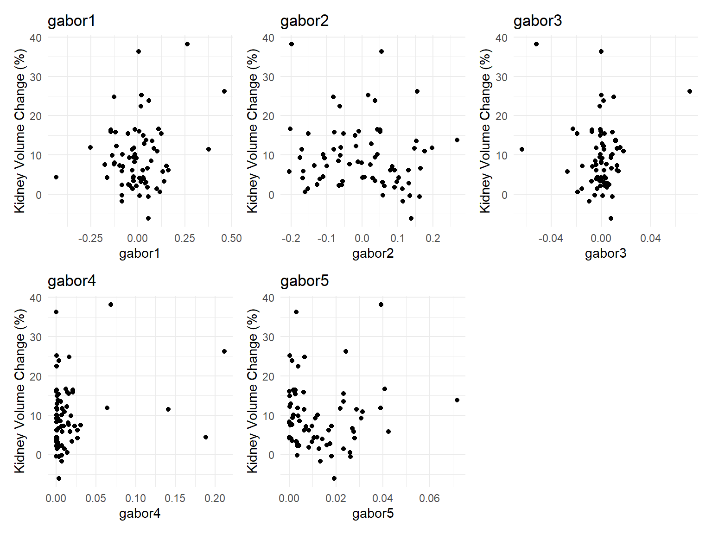
Square Root Transform
# Create histogram
hist_plot <- ggplot(data1_train, aes(x = sqrt(kidvol_change))) +
geom_histogram(binwidth = 0.5) +
theme_minimal() +
labs(title = "Histogram of Sqrt Kidney Volume Change",
y = "Count",
x = "Kidney Volume Change (%)")
# Create qqplot
qq_plot <- ggplot(data1_train, aes(sample = sqrt(kidvol_change))) +
geom_qq() +
geom_qq_line() +
theme_minimal() +
labs(title = "QQ Plot of Sqrt Kidney Volume Chage")
# Plot side by side
grid.arrange(hist_plot, qq_plot, ncol = 2)Warning in sqrt(kidvol_change): NaNs producedWarning: Removed 1 row containing non-finite outside the scale range
(`stat_bin()`).Warning in sqrt(kidvol_change): NaNs produced
Warning in sqrt(kidvol_change): NaNs producedWarning: Removed 1 row containing non-finite outside the scale range
(`stat_qq()`).Warning: Removed 1 row containing non-finite outside the scale range
(`stat_qq_line()`).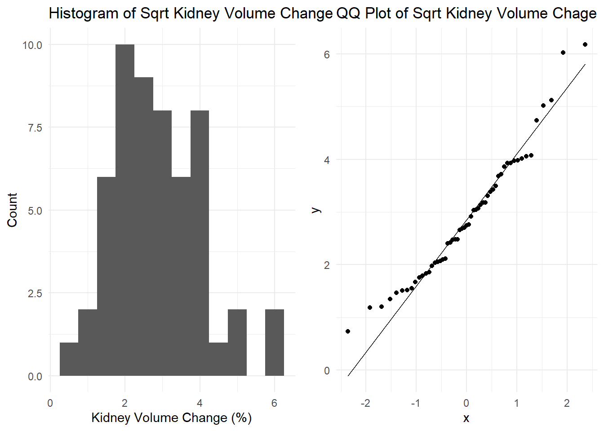
The log transform appears the best for us.
However, after checking with the professor, it is very rare in machine learning that we engineer the outcome variable at all.
# Create log change in kidney volume
data1_train <- data1_train |>
mutate(kidvol_change_log = log(kidvol_change))Warning: There was 1 warning in `mutate()`.
ℹ In argument: `kidvol_change_log = log(kidvol_change)`.
Caused by warning in `log()`:
! NaNs producedOutliers
It also appears that we have two outlier values. Let’s assess using boxplots.
# Calculate IQR and identify outliers
IQR_val <- IQR(data1_train$kidvol_change)
Q1 <- quantile(data1_train$kidvol_change, 0.25)
Q3 <- quantile(data1_train$kidvol_change, 0.75)
lower_bound <- Q1 - (1.5*IQR_val)
upper_bound <- Q3 + (1.5*IQR_val)
# Create boxplot and flag outliers
ggplot(data1_train, aes(x = "", y = kidvol_change)) +
geom_boxplot(alpha = 0.8) +
geom_text(aes(label = ifelse(kidvol_change < lower_bound | kidvol_change > upper_bound, Subject_ID, "")), hjust = -0.5, color = "red") +
theme_minimal() +
labs(title = "Boxplot of Kidney Volume Change",
x = "",
y = "Kidney Volume Change")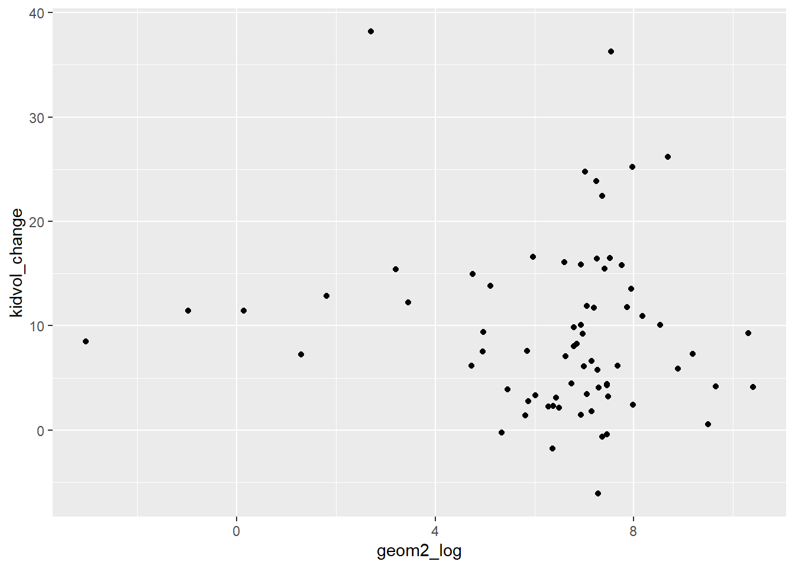
Patients 37 and 51 are flagging as potential outliers. Let’s examine them.
# Examine outlier patients
data1_train |>
arrange(desc(kidvol_change)) |>
head() |>
pretty_print()| Subject_ID | geom1 | geom2 | gabor1 | gabor2 | gabor3 | gabor4 | gabor5 | glcm1 | glcm2 | txti1 | txti2 | txti3 | txti4 | txti5 | lbp1 | lbp2 | lbp3 | lbp4 | lbp5 | kidvol_base | kidvol_visit2 | progression | kidvol_change | fold_number | kidvol_base_log | kidvol_change_log |
|---|---|---|---|---|---|---|---|---|---|---|---|---|---|---|---|---|---|---|---|---|---|---|---|---|---|---|
| 37 | -3.860771 | 14.90555 | 0.2621932 | -0.1983384 | -0.0520030 | 0.0687453 | 0.0393381 | 871.6238 | 759728.00 | -14.722587 | -1.969424 | 28.99502 | 216.75458 | 3.878631 | -0.0557547 | 0.0722141 | -0.0040263 | 0.0031086 | 0.0052149 | 173 | 372 | Fast | 38.19 | Fold3 | 5.153292 | 3.642574 |
| 51 | -43.393038 | 1882.95573 | 0.0047377 | 0.0544573 | 0.0002580 | 0.0000224 | 0.0029656 | 2454.8065 | 6026075.10 | -14.671508 | -9.355575 | 137.26039 | 215.25315 | 87.526780 | 0.1577583 | 0.1676594 | 0.0264497 | 0.0248877 | 0.0281097 | 185 | 387 | Fast | 36.28 | Fold2 | 5.220356 | 3.591267 |
| 52 | 77.054904 | 5937.45816 | 0.4598489 | 0.1556082 | 0.0715563 | 0.2114611 | 0.0242139 | -638.4451 | 407612.16 | 20.267845 | 9.686888 | 196.33234 | 410.78554 | 93.835797 | 9.7525713 | 1.1625327 | 11.3376835 | 95.1126464 | 1.3514824 | 358 | 640 | Fast | 26.18 | Fold4 | 5.880533 | 3.264996 |
| 16 | -53.668735 | 2880.33311 | 0.0179566 | 0.0169461 | 0.0003043 | 0.0003224 | 0.0002872 | -1045.7503 | 1093593.77 | 22.599974 | 6.944927 | 156.95517 | 510.75882 | 48.232014 | 1.2350248 | -0.0196489 | -0.0242669 | 1.5252862 | 0.0003861 | 124 | 218 | Fast | 25.19 | Fold4 | 4.820282 | 3.226447 |
| 12 | 39.713073 | 1577.12814 | 0.0171863 | -0.0625420 | -0.0010749 | 0.0002954 | 0.0039115 | -232.4497 | 54032.86 | 4.756968 | -5.052123 | -24.03279 | 22.62874 | 25.523950 | -0.4746998 | -0.2096379 | 0.0995151 | 0.2253399 | 0.0439481 | 571 | 955 | Fast | 22.43 | Fold2 | 6.347389 | 3.110399 |
| 27 | 19.823006 | 392.95157 | 0.1110084 | -0.2023359 | -0.0224610 | 0.0123229 | 0.0409398 | 1260.9953 | 1590109.19 | -23.601456 | -10.709026 | 252.74861 | 557.02874 | 114.683237 | -1.4239375 | 0.5109157 | -0.7275121 | 2.0275981 | 0.2610349 | 553 | 829 | Fast | 16.62 | Fold4 | 6.315358 | 2.810607 |
Interesting, it looks like these patients also have high values for certain MRI image features, such as GLCM 1 and 2. Additionally, they do not have the highest visit 2 kidney volumes, they simply increases in size the most.
Summary
Transformation
It appears that a log transform of kidvol_base gives us an approximately normal distribution, and this will be the value used for this covariate going forward.
Outliers
While patients 37 and 51 are potential outliers on kidvol_change, these are NOT erroneous values. On the contrary, they are backed up by similar high values on other measurements such as glcm2, but are not universally high on all MRI image features. In other words, these appear to be very realistic values.
In summary, all values are derived from authentic biological data. They will be examined using the jackknife residuals to assess for leverage and influence, but we are motivated to retain them in the analysis.
# Create bar plot
ggplot(data1_train, aes(x = progression, fill = progression)) +
geom_bar() +
theme_minimal() +
scale_fill_brewer(palette = "Pastel2") +
ylim(0, 45) +
labs(title = "Count of Slow vs Fast Disease Progression",
x = "Disease Progression",
y = "Count",
fill = "Progression")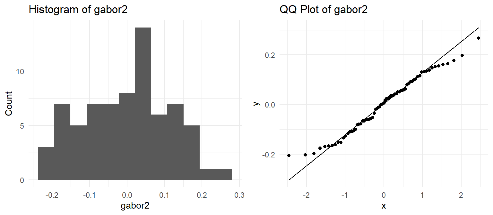
# Create Table
table(data1_train$progression)
Slow Fast
28 28 We have an equal amount of patients that had slow vs fast disease progression.
Kidney Volume Change
kidvol_change is approximately normally distributed following a log transform, with 2 potential outliers we will keep an eye on.
Slow vs Fast Disease Progression
We have an even count between patients who had slow vs fast disease progression.
Feature Engineering I
An assumption for a linear regression is that there is a linear relationship between the predictor and the outcome variable.
Thus for the initial step, we will examine the distribution of our variables and create a quadratic term or take the log for each variable as necessary.
# Create histogram
hist_plot <- ggplot(data1_train, aes(x = geom1)) +
geom_histogram(binwidth = 30) +
theme_minimal() +
labs(title = "Histogram of Geom1",
x = "Geom1",
y = "Count")
# Create qqplot
qq_plot <- ggplot(data1_train, aes(sample = geom1)) +
geom_qq() +
geom_qq_line() +
theme_minimal() +
labs(title = "QQ Plot of Geom1")
# Plot side by side
grid.arrange(hist_plot, qq_plot, ncol = 2)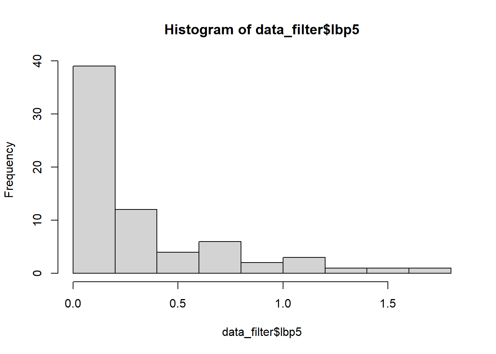
There is 1 patient with a drastically lower value than everyone else. Let’s examine.
# Filter to most negative geom1 value
data1_train |>
arrange(geom1) |>
select(Subject_ID, geom1, geom2) |>
head() |>
pretty_print()| Subject_ID | geom1 | geom2 |
|---|---|---|
| 48 | -124.26679 | 15442.236 |
| 7 | -59.49517 | 3539.675 |
| 16 | -53.66873 | 2880.333 |
| 66 | -53.22180 | 2832.560 |
| 69 | -46.48719 | 2161.059 |
| 51 | -43.39304 | 1882.956 |
Patient 48 appears to be an outlier on geom1.
Perform Yeo Johnson Transformation
Since we have negatie we have to perform the yeo johnson transformation or we will lose observations as NA values.
# Use bestNormalize R package to select the best transformation
BNObject <- bestNormalize(data1_train$geom1)
BNObjectBest Normalizing transformation with 56 Observations
Estimated Normality Statistics (Pearson P / df, lower => more normal):
- arcsinh(x): 3.3087
- Center+scale: 1.9827
- Double Reversed Log_b(x+a): 2.4733
- Exp(x): 4.596
- Log_b(x+a): 1.396
- orderNorm (ORQ): 1.5187
- sqrt(x + a): 1.65
- Yeo-Johnson: 1.78
Estimation method: Out-of-sample via CV with 10 folds and 5 repeats
Based off these, bestNormalize chose:
Standardized Log_b(x + a) Transformation with 56 nonmissing obs.:
Relevant statistics:
- a = 124.2678
- b = 10
- mean (before standardization) = 1.998683
- sd (before standardization) = 0.6974149 # Create histogram
hist_plot <- ggplot(data1_train, aes(x = yeojohnson(geom1)$x.t)) +
geom_histogram(binwidth = .4) +
theme_minimal() +
labs(title = "Histogram of Yeo Johnson Geom1",
y = "Count",
x = "Log Geom1")
# Create qqplot
qq_plot <- ggplot(data1_train, aes(sample = yeojohnson(geom1)$x.t)) +
geom_qq() +
geom_qq_line() +
theme_minimal() +
labs(title = "QQ Plot of Yeo Johnson Geom1")
# Plot side by side
grid.arrange(hist_plot, qq_plot, ncol = 2)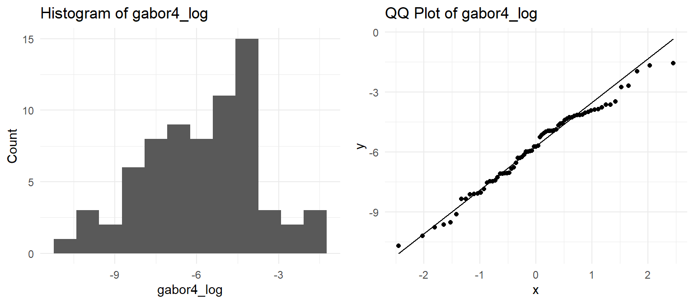
# Perform transform
data1_train <- data1_train |>
mutate(geom1_yeo = yeojohnson(geom1)$x.t)geom is more normally distributed after a Yeo Johnson transform.
Summary
geom1 is normally distributed following a Yeo Johnson transform. There is potentially one outlier on the negative side, but this seemed to not be a factor after transforming.
# Create histogram
hist_plot <- ggplot(data1_train, aes(x = geom2)) +
geom_histogram(binwidth = 300) +
theme_minimal() +
labs(title = "Histogram of Geom2",
x = "Geom2",
y = "Count")
# Create qqplot
qq_plot <- ggplot(data1_train, aes(sample = geom2)) +
geom_qq() +
geom_qq_line() +
theme_minimal() +
labs(title = "QQ Plot of Geom2")
# Plot side by side
grid.arrange(hist_plot, qq_plot, ncol = 2)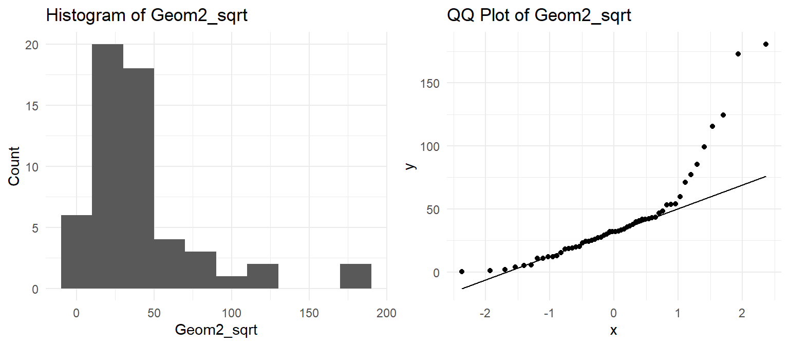
geom2 appears to be logarithmic. Let’s adjust.
Square Root Transformation
# Create new variable
data1_train <- data1_train |>
mutate(geom2_sqrt = sqrt(geom2),
geom2_log = log(geom2))
# Create histogram
hist_plot <- ggplot(data1_train, aes(x = geom2_sqrt)) +
geom_histogram(binwidth = 20) +
theme_minimal() +
labs(title = "Histogram of Geom2_sqrt",
x = "Geom2_sqrt",
y = "Count")
# Create qqplot
qq_plot <- ggplot(data1_train, aes(sample = geom2_sqrt)) +
geom_qq() +
geom_qq_line() +
theme_minimal() +
labs(title = "QQ Plot of Geom2_sqrt")
# Plot side by side
grid.arrange(hist_plot, qq_plot, ncol = 2)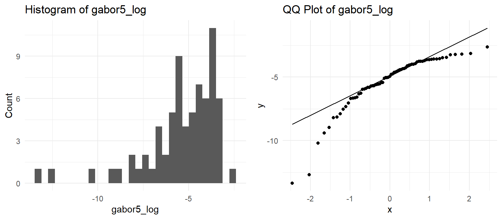
Sqrt kind of makes it better, but not quite.
Log Transformation
Let’s examine the log.
# Create histogram
hist_plot <- ggplot(data1_train, aes(x = log(geom2))) +
geom_histogram(binwidth = 1) +
theme_minimal() +
labs(title = "Histogram of Geom2 log",
x = "Geom2 log",
y = "Count")
# Create qqplot
qq_plot <- ggplot(data1_train, aes(sample = log(geom2))) +
geom_qq() +
geom_qq_line() +
theme_minimal() +
labs(title = "QQ Plot of Geom2 log")
# Plot side by side
grid.arrange(hist_plot, qq_plot, ncol = 2)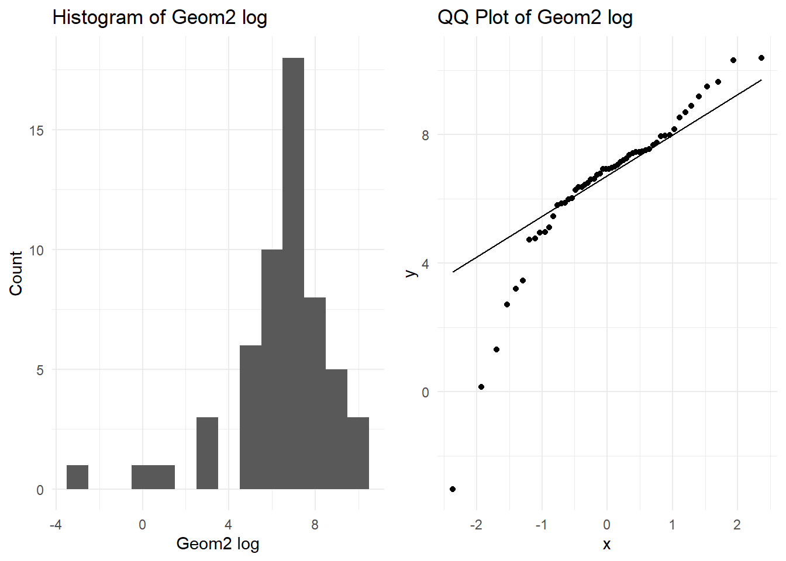
Yeo Johnson Transform
A Yeo Johnson transformation
# Use bestNormalize R package to select the best transformation
BNObject <- bestNormalize(data1_train$geom2)
BNObjectBest Normalizing transformation with 56 Observations
Estimated Normality Statistics (Pearson P / df, lower => more normal):
- arcsinh(x): 1.7313
- Box-Cox: 1.8647
- Center+scale: 3.9007
- Double Reversed Log_b(x+a): 4.1427
- Log_b(x+a): 1.7467
- orderNorm (ORQ): 1.7467
- sqrt(x + a): 2.2773
- Yeo-Johnson: 1.7813
Estimation method: Out-of-sample via CV with 10 folds and 5 repeats
Based off these, bestNormalize chose:
Standardized asinh(x) Transformation with 56 nonmissing obs.:
Relevant statistics:
- mean (before standardization) = 7.243183
- sd (before standardization) = 2.168931 # Create histogram
hist_plot <- ggplot(data, aes(x = yeojohnson(geom2)$x.t)) +
geom_histogram(binwidth = 1) +
theme_minimal() +
labs(title = "Histogram of Geom2 Yeo",
x = "Geom2 Yeo",
y = "Count")
# Create qqplot
qq_plot <- ggplot(data, aes(sample = yeojohnson(geom2)$x.t)) +
geom_qq() +
geom_qq_line() +
theme_minimal() +
labs(title = "QQ Plot of Geom2 Yeo")
# Plot side by side
grid.arrange(hist_plot, qq_plot, ncol = 2)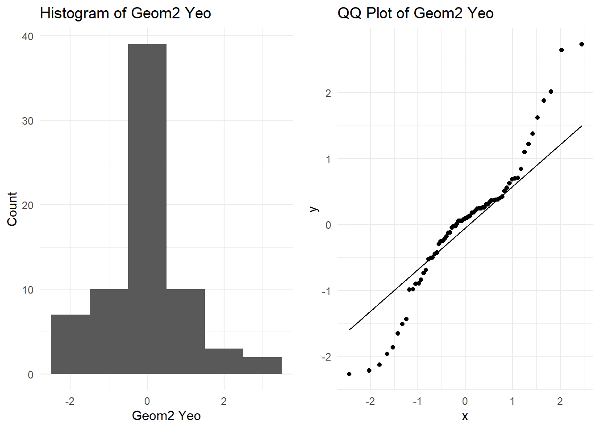
# Create the variable
data1_train <- data1_train |>
mutate(geom2_yeo = yeojohnson(geom2)$x.t)I think log or yeo is our best bet here.
Summary
While there is no transformation that makes geom2 normally distributed, log or yeojohnson transformation may help and will be considered. Let’s select Yeo Johnson as it looks slightly better.
# Create histogram
hist_plot <- ggplot(data1_train, aes(x = gabor1)) +
geom_histogram(binwidth = 0.2) +
theme_minimal() +
labs(title = "Histogram of Gabor1",
x = "Gabor2",
y = "Count")
# Create qqplot
qq_plot <- ggplot(data1_train, aes(sample = gabor1)) +
geom_qq() +
geom_qq_line() +
theme_minimal() +
labs(title = "QQ Plot of Gabor1")
# Plot side by side
grid.arrange(hist_plot, qq_plot, ncol = 2)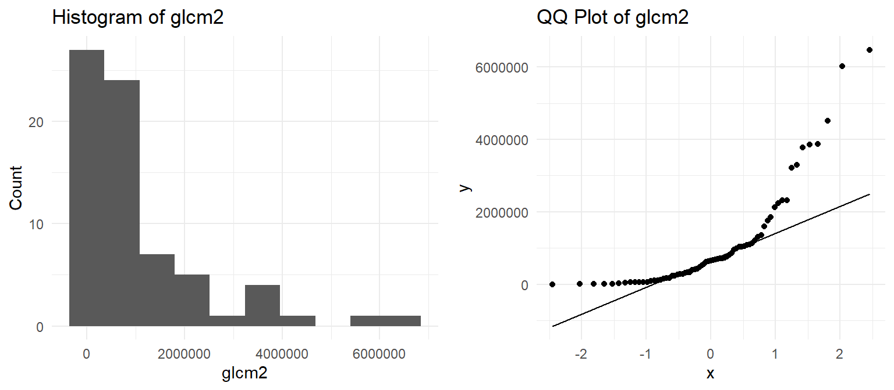
gabor1 is normally distributed.
# Make plots
distr_plots(data1_train, "gabor2", 12)Warning: `aes_string()` was deprecated in ggplot2 3.0.0.
ℹ Please use tidy evaluation idioms with `aes()`.
ℹ See also `vignette("ggplot2-in-packages")` for more information.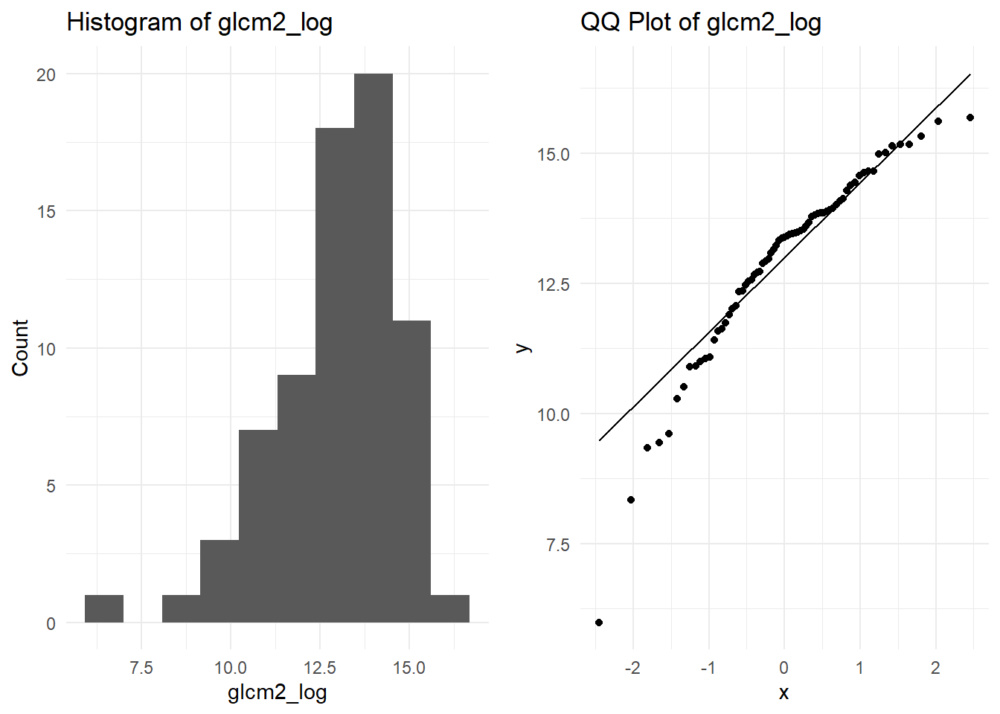
gabor2 appears approximately normally distributed.
# Use bestNormalize R package to select the best transformation
BNObject <- bestNormalize(data1_train$gabor2)
BNObjectBest Normalizing transformation with 56 Observations
Estimated Normality Statistics (Pearson P / df, lower => more normal):
- arcsinh(x): 1.402
- Center+scale: 1.402
- Double Reversed Log_b(x+a): 1.1913
- Exp(x): 1.2947
- Log_b(x+a): 2.104
- orderNorm (ORQ): 1.616
- sqrt(x + a): 1.5867
- Yeo-Johnson: 1.502
Estimation method: Out-of-sample via CV with 10 folds and 5 repeats
Based off these, bestNormalize chose:
Standardized double reversed Log_b(x + a) Transformation with 56 nonmissing obs.:
Relevant statistics:
- a =
- b = 10
- max(x) = 0.3151444 ; min(x) = -0.2533082
- mean (before standardization) = 0.2727949
- sd (before standardization) = 0.1871679 It looks like a yeo johnson transformation will be most appropriate here.
data1_train <- data1_train |>
mutate(gabor2_yeo = yeojohnson(gabor2)$x.t)
distr_plots(data1_train, "gabor2_yeo", 10)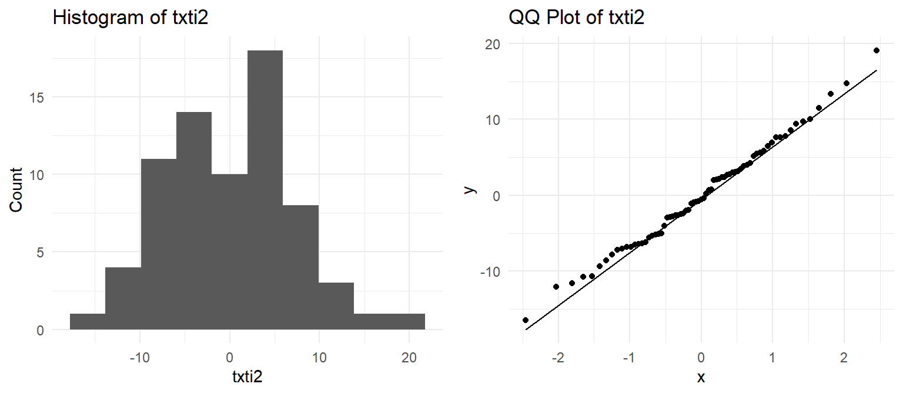
A yeo johnson transformation slightly improves the normality of gabor2.
# Make plots
distr_plots(data1_train, "gabor3", 30)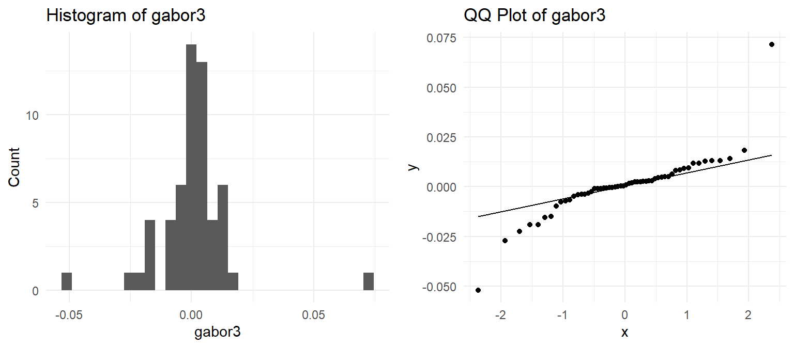
gabor3 appears approximately normally distributed, with some potential outliers.
# Use bestNormalize R package to select the best transformation
BNObject <- bestNormalize(data1_train$gabor3)
BNObjectBest Normalizing transformation with 56 Observations
Estimated Normality Statistics (Pearson P / df, lower => more normal):
- arcsinh(x): 1.6907
- Center+scale: 1.6907
- Double Reversed Log_b(x+a): 1.4893
- Exp(x): 1.6907
- Log_b(x+a): 1.744
- orderNorm (ORQ): 1.6227
- sqrt(x + a): 1.5147
- Yeo-Johnson: 1.7907
Estimation method: Out-of-sample via CV with 10 folds and 5 repeats
Based off these, bestNormalize chose:
Standardized double reversed Log_b(x + a) Transformation with 56 nonmissing obs.:
Relevant statistics:
- a =
- b = 10
- max(x) = 0.08391221 ; min(x) = -0.0643589
- mean (before standardization) = 0.2611926
- sd (before standardization) = 0.1237591 Transformations don’t seem to help much here. We want the values to be closest to 1 to indicate more normality.
Summary
Transformation doesn’t seem to help much with gabor3.
# Make plots
distr_plots(data1_train, "gabor4", 30)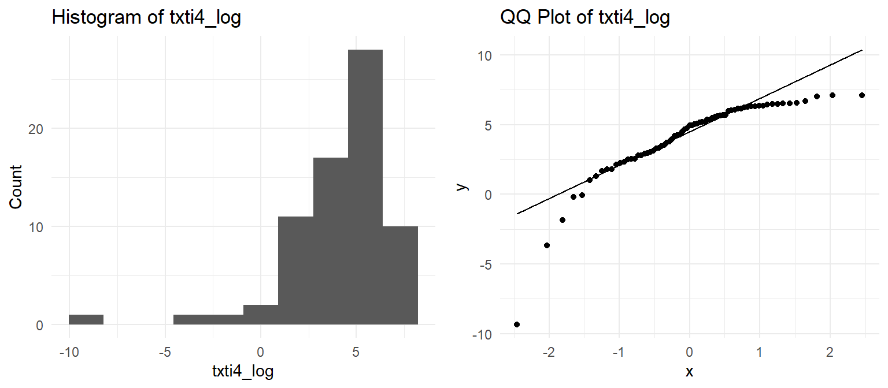
gabor4 may be exponential.
data1_train <- data1_train |>
mutate(gabor4_log = log(gabor4))
distr_plots(data1_train, "gabor4_log", 12)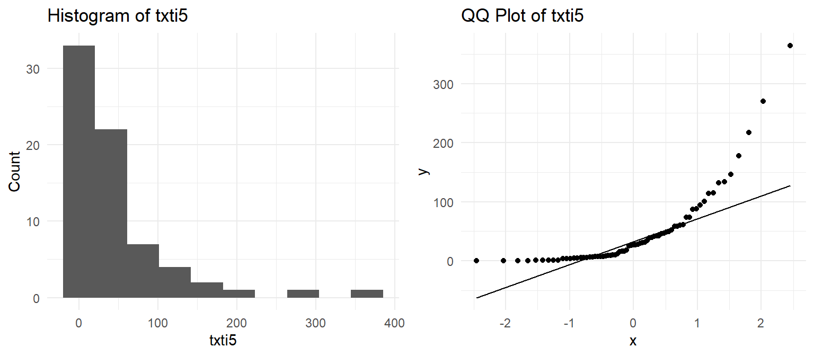
gabor4_log appears to be normally distributed.
Summary
The log transform of gabor4 made it approximately normal.
# Make plots
distr_plots(data1_train, "gabor5", 30)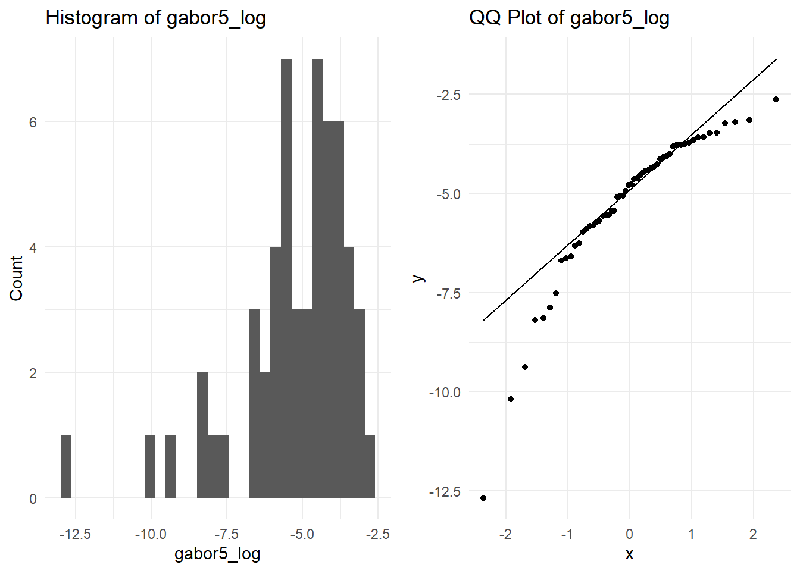
gabor5 looks logarithmic potentially.
Log Transform
# Use bestNormalize R package to select the best transformation
BNObject <- bestNormalize(data1_train$gabor5)
BNObjectBest Normalizing transformation with 56 Observations
Estimated Normality Statistics (Pearson P / df, lower => more normal):
- arcsinh(x): 1.8227
- Box-Cox: 1.274
- Center+scale: 1.8227
- Double Reversed Log_b(x+a): 2.138
- Exp(x): 1.8227
- Log_b(x+a): 1.4367
- orderNorm (ORQ): 1.3267
- sqrt(x + a): 1.3587
- Yeo-Johnson: 1.742
Estimation method: Out-of-sample via CV with 10 folds and 5 repeats
Based off these, bestNormalize chose:
Standardized Box Cox Transformation with 56 nonmissing obs.:
Estimated statistics:
- lambda = 0.2934285
- mean (before standardization) = -2.58858
- sd (before standardization) = 0.3299984 # Create log term
data1_train <- data1_train |>
mutate(gabor5_log = log(gabor5))
distr_plots(data1_train, "gabor5_log", 30)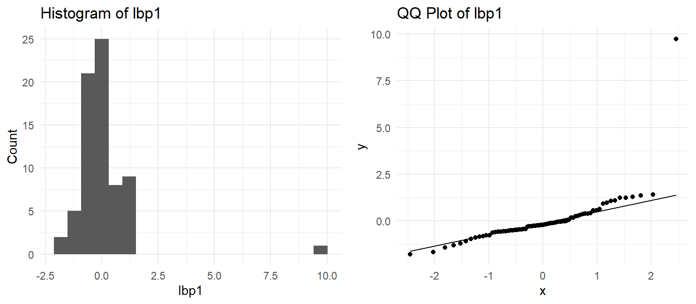
That’s kind of better.
# Calculate IQR and identify outliers
IQR_val <- IQR(data1_train$gabor5_log)
Q1 <- quantile(data1_train$gabor5_log, 0.25)
Q3 <- quantile(data1_train$gabor5_log, 0.75)
lower_bound <- Q1 - (1.5*IQR_val)
upper_bound <- Q3 + (1.5*IQR_val)
# Create boxplot and flag outliers
ggplot(data1_train, aes(x = "", y = gabor5_log)) +
geom_boxplot(alpha = 0.8) +
geom_text(aes(label = ifelse(gabor5_log < lower_bound | gabor5_log > upper_bound, Subject_ID, "")), hjust = -0.5, color = "red") +
theme_minimal() +
labs(title = "Boxplot of Gabor5",
x = "",
y = "Gabor5")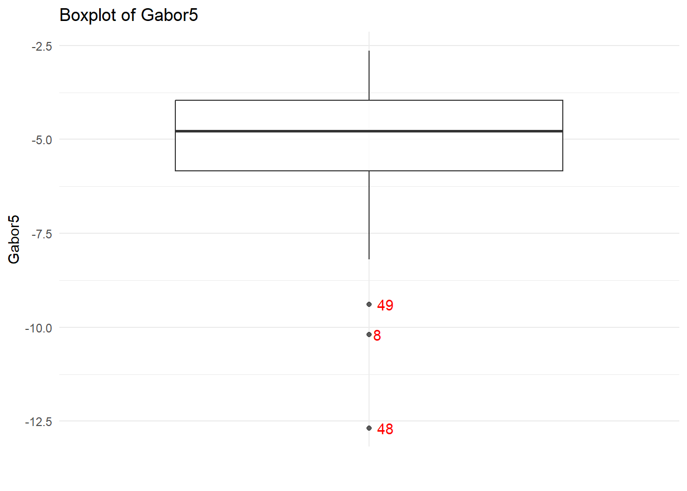
Summary
gabor5 is not normally distributed, and no transform seems to help much. It may be dropped from consideration.
GLCM1
# Make plots
distr_plots(data1_train, "glcm1", 10)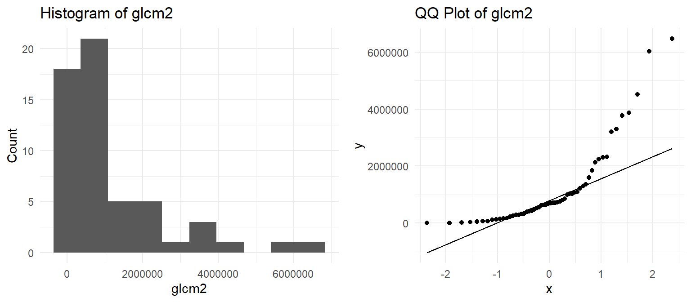
glcm1 is approximately normally distributed.
GLCM2
# Make plots
distr_plots(data1_train, "glcm2", 10)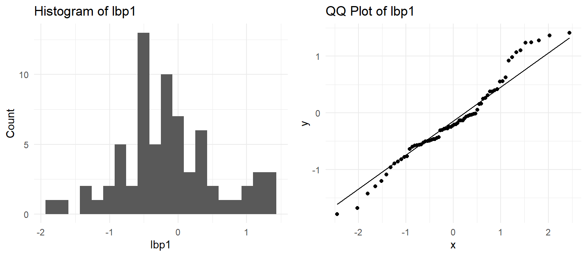
glcm2 may be logarithmic.
Log Transform
# Create log variable
data1_train <- data1_train |>
mutate(glcm2_log = log(glcm2))
#| fig-height: 3.5
#| fig-width: 8
# Make plots
distr_plots(data1_train, "glcm2_log", 10)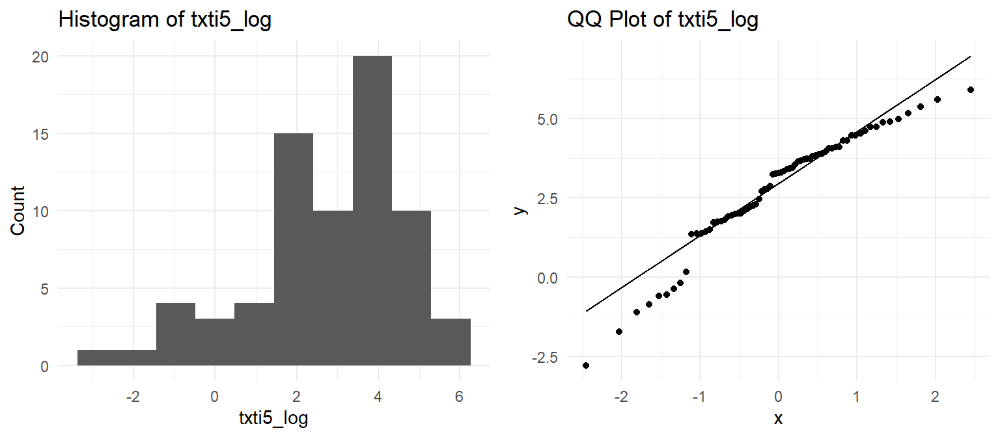
# Use bestNormalize R package to select the best transformation
BNObject <- bestNormalize(data1_train$glcm2)
BNObjectBest Normalizing transformation with 56 Observations
Estimated Normality Statistics (Pearson P / df, lower => more normal):
- arcsinh(x): 1.5713
- Box-Cox: 1.4393
- Center+scale: 2.778
- Double Reversed Log_b(x+a): 3.388
- Log_b(x+a): 1.5713
- orderNorm (ORQ): 1.7147
- sqrt(x + a): 1.6827
- Yeo-Johnson: 1.4393
Estimation method: Out-of-sample via CV with 10 folds and 5 repeats
Based off these, bestNormalize chose:
Standardized Box Cox Transformation with 56 nonmissing obs.:
Estimated statistics:
- lambda = 0.245653
- mean (before standardization) = 105.7341
- sd (before standardization) = 37.69292 It appears that this is the best transformation we will get.
Summary
The best transformation for glcm2 is a log transform.
# Make plots
distr_plots(data1_train, "txti1", 10)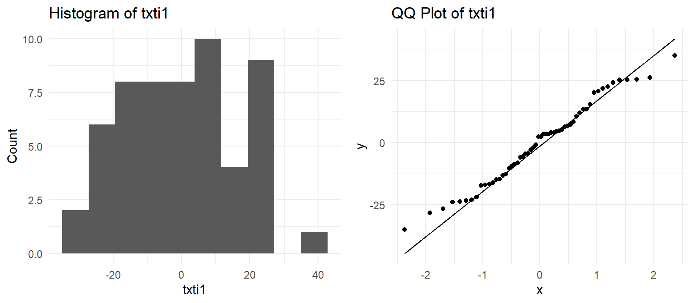
Summary
txti1 appears normally distributed
# Make plots
distr_plots(data1_train, "txti2", 10)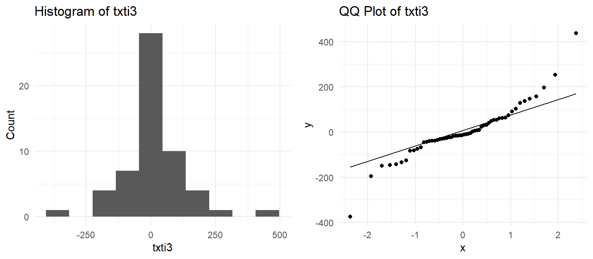
Summary
txti2 appears normally distributed.
# Make plots
distr_plots(data1_train, "txti3", 10)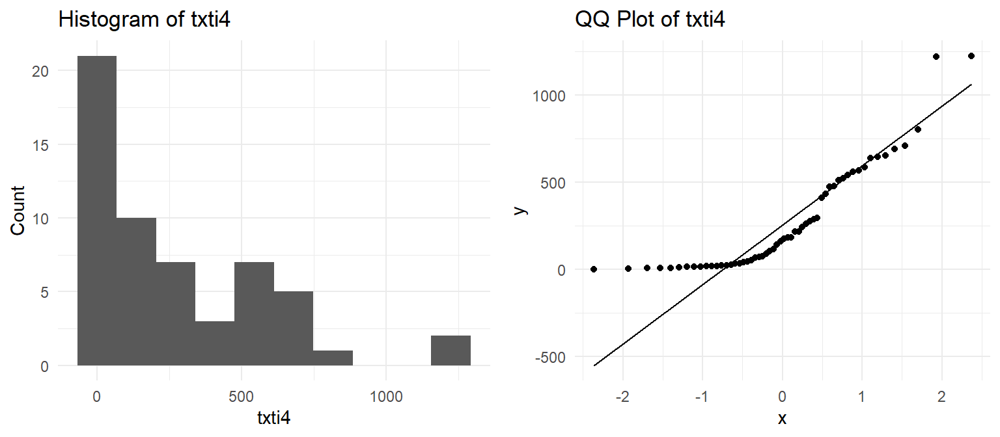
Summary
txti3 appears normally distributed.
# Make plots
distr_plots(data1_train, "txti4", 10)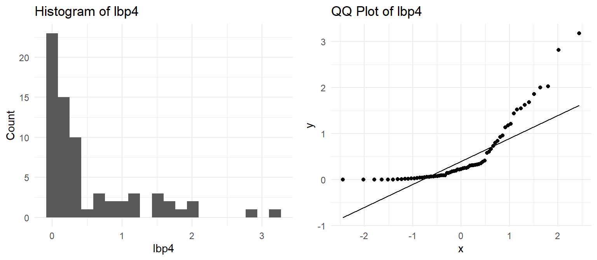
txti4 may be logarithmic.
Log Transform
data1_train <- data1_train |>
mutate(txti4_log = log(txti4))
# Make plots
distr_plots(data1_train, "txti4_log", 10)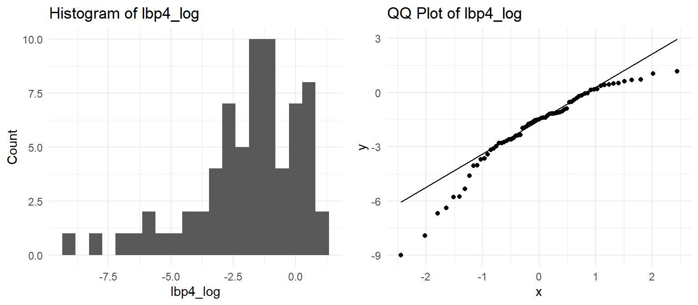
That’s better, still not perfect.
# Use bestNormalize R package to select the best transformation
BNObject <- bestNormalize(data1_train$txti4)
BNObjectBest Normalizing transformation with 56 Observations
Estimated Normality Statistics (Pearson P / df, lower => more normal):
- arcsinh(x): 1.8187
- Box-Cox: 1.57
- Center+scale: 2.6113
- Double Reversed Log_b(x+a): 3.1647
- Log_b(x+a): 1.8187
- orderNorm (ORQ): 1.574
- sqrt(x + a): 1.442
- Yeo-Johnson: 1.62
Estimation method: Out-of-sample via CV with 10 folds and 5 repeats
Based off these, bestNormalize chose:
Standardized sqrt(x + a) Transformation with 56 nonmissing obs.:
Relevant statistics:
- a = 0
- mean (before standardization) = 13.72864
- sd (before standardization) = 9.201842 Log is better than sqrt so we will use log.
Summary
The best transformation for txtxi4 is log, though it is still not perfect.
distr_plots(data1_train, "txti5", 10)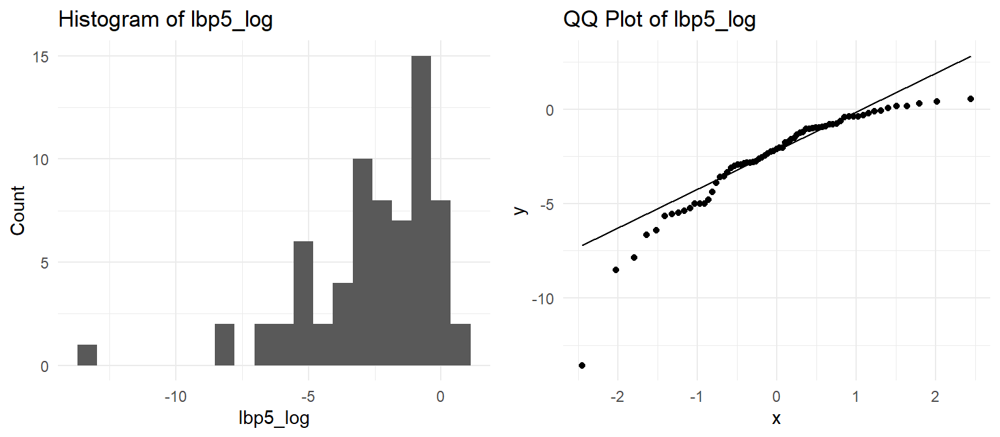
May be logarithmic.
Log Transform
data1_train <- data1_train |>
mutate(txti5_log = log(txti5))
#| # Make plots
distr_plots(data1_train, "txti5_log", 10)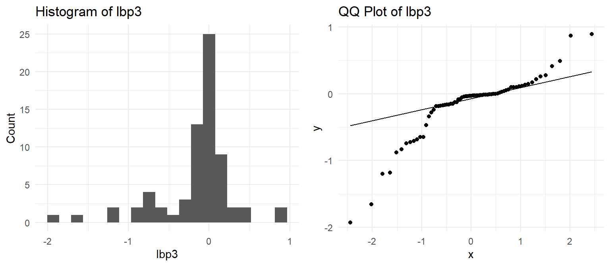
That looks better. Mostly.
# Use bestNormalize R package to select the best transformation
BNObject <- bestNormalize(data1_train$txti5)
BNObjectBest Normalizing transformation with 56 Observations
Estimated Normality Statistics (Pearson P / df, lower => more normal):
- arcsinh(x): 1.4227
- Box-Cox: 1.2587
- Center+scale: 2.5847
- Double Reversed Log_b(x+a): 2.79
- Exp(x): 4.2093
- Log_b(x+a): 1.4727
- orderNorm (ORQ): 1.624
- sqrt(x + a): 1.52
- Yeo-Johnson: 1.242
Estimation method: Out-of-sample via CV with 10 folds and 5 repeats
Based off these, bestNormalize chose:
Standardized Yeo-Johnson Transformation with 56 nonmissing obs.:
Estimated statistics:
- lambda = 0.09721794
- mean (before standardization) = 3.760793
- sd (before standardization) = 1.937912 Log performs better than sqrt, that’s as good as we can get.
Summary
The best transformation for txti5 is logarithmic.
distr_plots(data1_train, "lbp1", 20)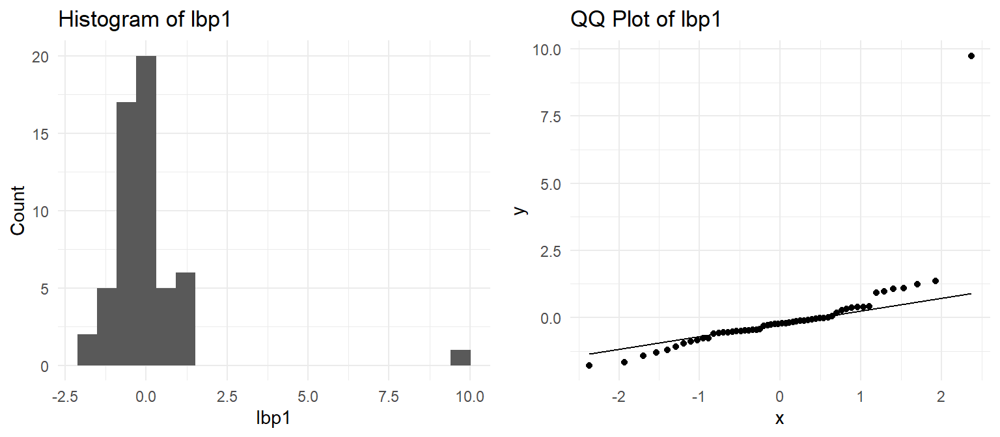
Looks normally distributed with 1 outlier.
Remove Outlier
# Examine LBP outlier
data1_train |>
arrange(desc(lbp3)) |>
select(Subject_ID, lbp1, lbp2, lbp3, lbp4, lbp5) |>
head() |>
pretty_print()| Subject_ID | lbp1 | lbp2 | lbp3 | lbp4 | lbp5 |
|---|---|---|---|---|---|
| 52 | 9.7525713 | 1.1625327 | 11.3376835 | 95.1126464 | 1.3514824 |
| 14 | -1.0859087 | -0.8250696 | 0.8959503 | 1.1791977 | 0.6807399 |
| 61 | -1.2967552 | -0.6707632 | 0.8698157 | 1.6815740 | 0.4499233 |
| 28 | -0.5774531 | -0.8531963 | 0.4926809 | 0.3334521 | 0.7279439 |
| 40 | -0.5010965 | -0.8251542 | 0.4134818 | 0.2510977 | 0.6808794 |
| 7 | 0.3763026 | 0.7299012 | 0.2746638 | 0.1416037 | 0.5327558 |
Patient 52 is a CLEAR outlier (lbp3 = 11, no othe patients have an lbp3 over 1).
We remove them.
# Remove outlier patient
data1_train <- data1_train |>
filter(!Subject_ID == 52)Remake Plots
distr_plots(data1_train, "lbp1", 10)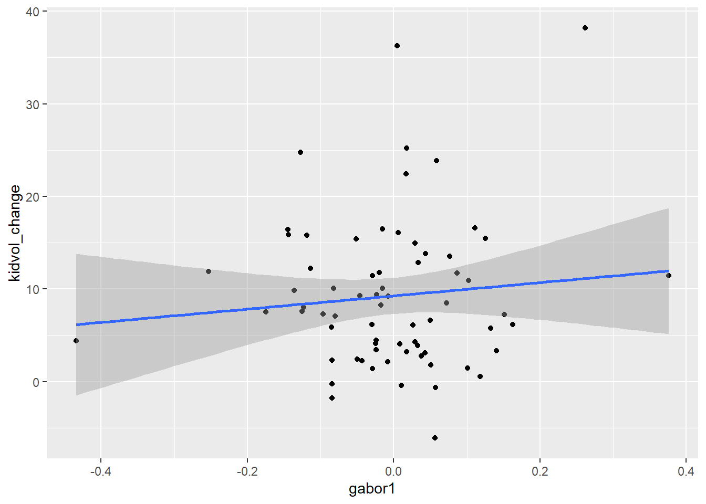
That’s close to normal, let’s check if it could be better.
# Use bestNormalize R package to select the best transformation
BNObject <- bestNormalize(data1_train$lbp1)
BNObjectBest Normalizing transformation with 55 Observations
Estimated Normality Statistics (Pearson P / df, lower => more normal):
- arcsinh(x): 1.4007
- Center+scale: 1.5273
- Double Reversed Log_b(x+a): 2.018
- Exp(x): 2.1807
- Log_b(x+a): 2.1373
- orderNorm (ORQ): 1.3633
- sqrt(x + a): 1.6867
- Yeo-Johnson: 1.594
Estimation method: Out-of-sample via CV with 10 folds and 5 repeats
Based off these, bestNormalize chose:
orderNorm Transformation with 55 nonmissing obs and no ties
- Original quantiles:
0% 25% 50% 75% 100%
-1.784 -0.562 -0.246 0.023 1.363 Yeo Johnson Transform
It seems a yeo transformation will be the best (since we have negatives and a log and sqrt transformation will cause NA values)
# Perform transform
data1_train <- data1_train |>
mutate(lbp1_yeo = yeojohnson(lbp1)$x.t)
#| # Make plots
distr_plots(data1_train, "lbp1_yeo", 10)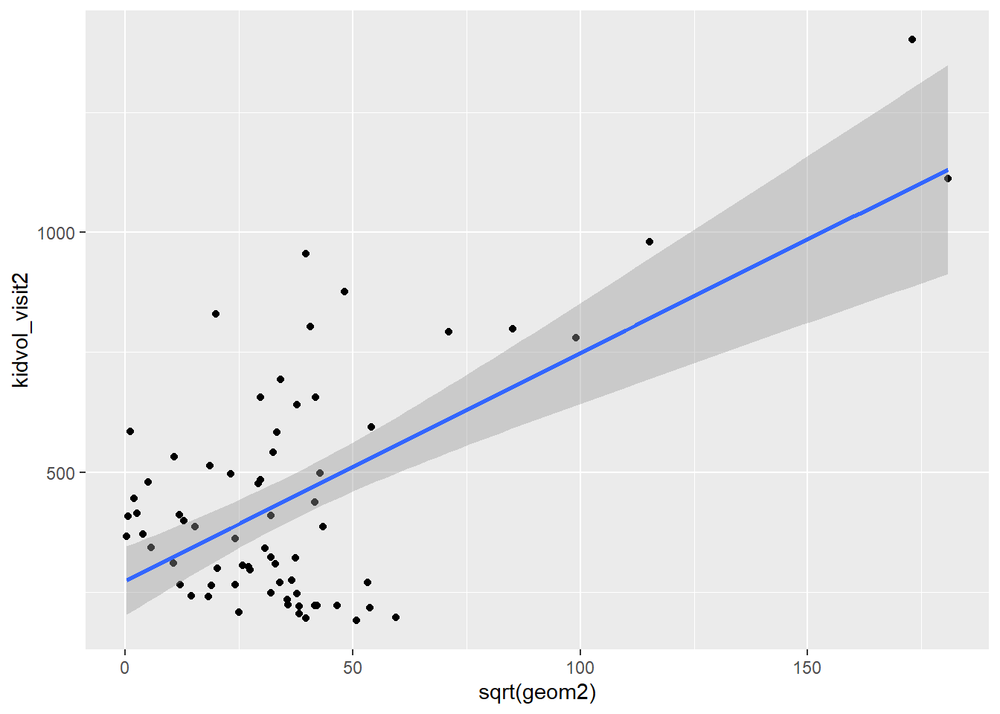
It’s slightly better, but not by much.
Summary
A yeo johnson transformation helps a little bit.
We will choose to not transform this variable.
Note
Note: Patient 52 is a clear outlier and possibly erroneous value on the lbp features. Ensure to remove it from all data sets!
distr_plots(data1_train, "lbp2", 20)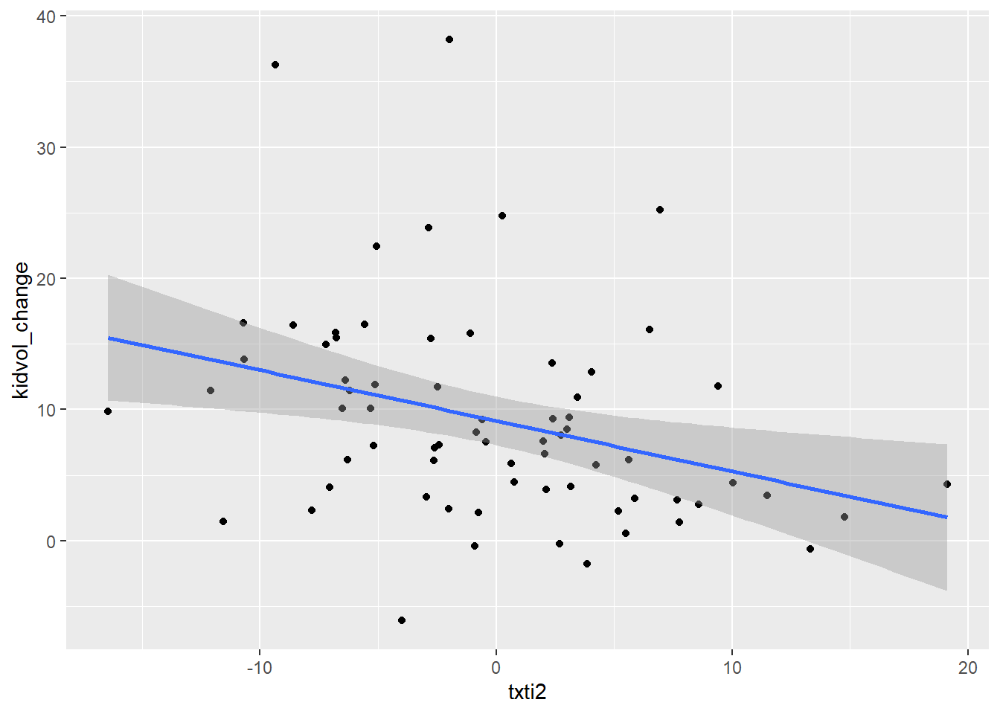
We appear to have a different outlier for lbp2.
# Examine outlier
data1_train |>
arrange(desc(lbp2)) |>
select(Subject_ID, lbp1, lbp2, lbp3, lbp4, lbp5) |>
head() |>
pretty_print()| Subject_ID | lbp1 | lbp2 | lbp3 | lbp4 | lbp5 |
|---|---|---|---|---|---|
| 48 | -0.1337633 | 3.0589420 | -0.4091741 | 0.0178926 | 9.3571262 |
| 8 | -1.7843187 | 1.0797790 | -1.9266699 | 3.1837934 | 1.1659227 |
| 30 | -0.8565558 | 1.0250395 | -0.8780035 | 0.7336879 | 1.0507059 |
| 66 | -0.0191984 | 0.9612270 | -0.0184540 | 0.0003686 | 0.9239573 |
| 7 | 0.3763026 | 0.7299012 | 0.2746638 | 0.1416037 | 0.5327558 |
| 3 | -0.2515471 | 0.6778935 | -0.1705221 | 0.0632760 | 0.4595395 |
Patient 48 is an outlier on lbp2 (lbp2 = 3, all other patients are essentially below 1).
We remove them
# Remove outlier
data1_train <- data1_train |>
filter(!Subject_ID == 48)Remake Plots
distr_plots(data1_train, "lbp2", 20)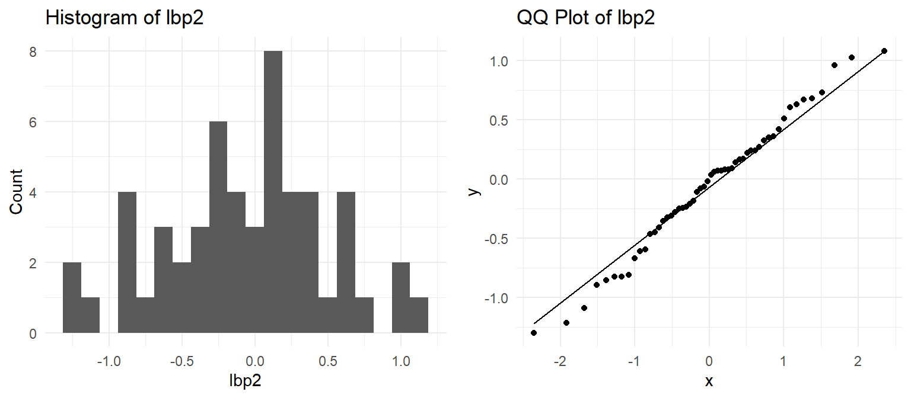
lbp2 is normally distributed
distr_plots(data1_train, "lbp3", 20)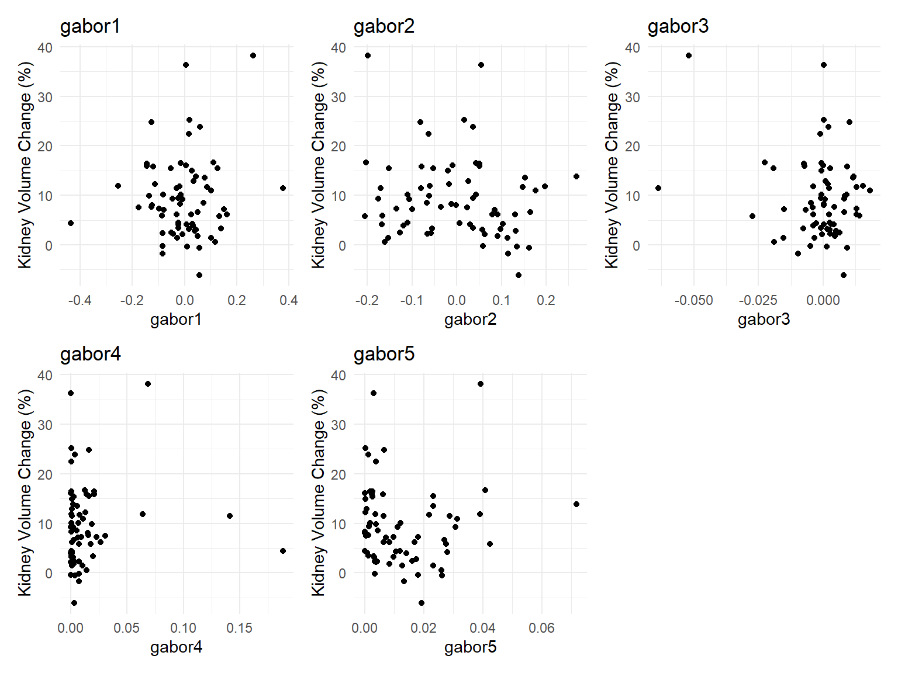
Doesn’t look too good.
# Use bestNormalize R package to select the best transformation
BNObject <- bestNormalize(data1_train$lbp3)
BNObjectBest Normalizing transformation with 54 Observations
Estimated Normality Statistics (Pearson P / df, lower => more normal):
- arcsinh(x): 2.3647
- Center+scale: 2.5773
- Double Reversed Log_b(x+a): 2.5847
- Exp(x): 2.3413
- Log_b(x+a): 2.93
- orderNorm (ORQ): 1.34
- sqrt(x + a): 2.532
- Yeo-Johnson: 2.6347
Estimation method: Out-of-sample via CV with 10 folds and 5 repeats
Based off these, bestNormalize chose:
orderNorm Transformation with 54 nonmissing obs and no ties
- Original quantiles:
0% 25% 50% 75% 100%
-1.927 -0.173 -0.025 0.061 0.896 None of the transformations help much here.
Summary
lbp3 is not normally distributed and no transformations help. We keep the original unmodified values.
distr_plots(data1_train, "lbp4", 20)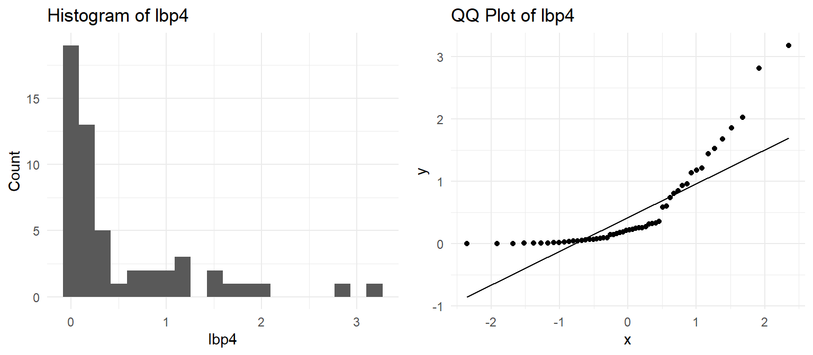
lbp4 appears logarithmic.
# Create log variable
data1_train <- data1_train |>
mutate(lbp4_log = log(lbp4))
#| # Make plots
distr_plots(data1_train, "lbp4_log", 20)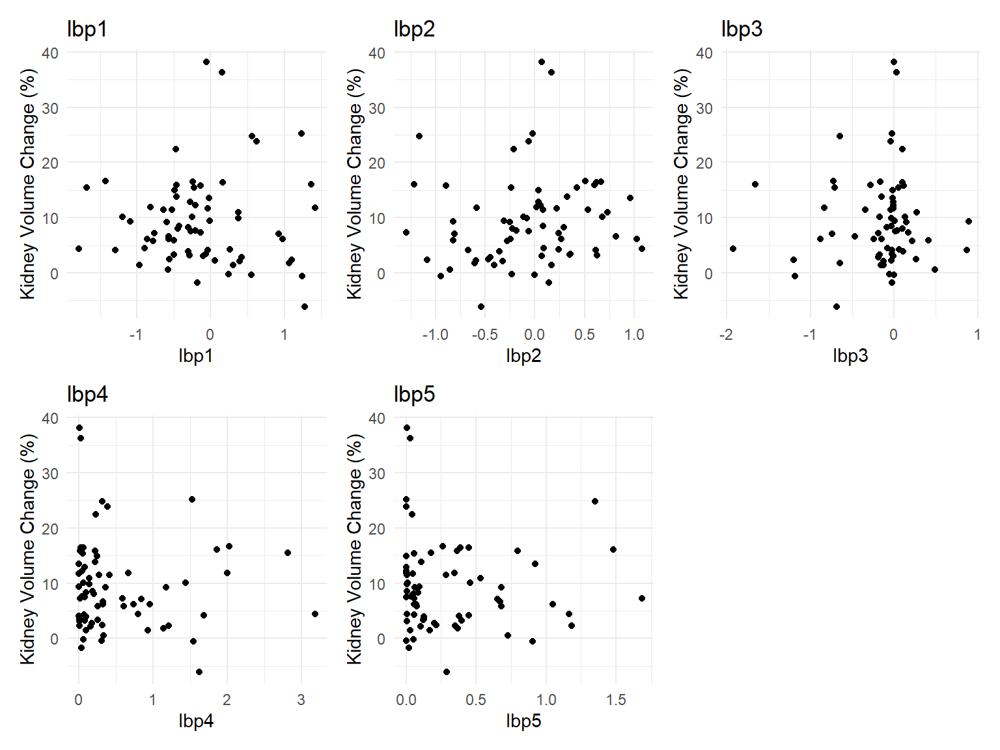
Looks better.
# Use bestNormalize R package to select the best transformation
BNObject <- bestNormalize(data1_train$lbp4)
BNObjectBest Normalizing transformation with 54 Observations
Estimated Normality Statistics (Pearson P / df, lower => more normal):
- arcsinh(x): 2.7933
- Box-Cox: 1.4373
- Center+scale: 3.0213
- Double Reversed Log_b(x+a): 3.4987
- Exp(x): 4.196
- Log_b(x+a): 1.5973
- orderNorm (ORQ): 1.7753
- sqrt(x + a): 1.7087
- Yeo-Johnson: 1.7753
Estimation method: Out-of-sample via CV with 10 folds and 5 repeats
Based off these, bestNormalize chose:
Standardized Box Cox Transformation with 54 nonmissing obs.:
Estimated statistics:
- lambda = 0.1878715
- mean (before standardization) = -1.381953
- sd (before standardization) = 1.378322 The log transform also provides the best performance here.
Summary
The log transform provides the best distribution for lbp4
Note
Note: Patient 48 is a clear outlier and possibly erroneous value on the lbp2 feature. Ensure to remove it from all data sets!
distr_plots(data1_train, "lbp5", 20)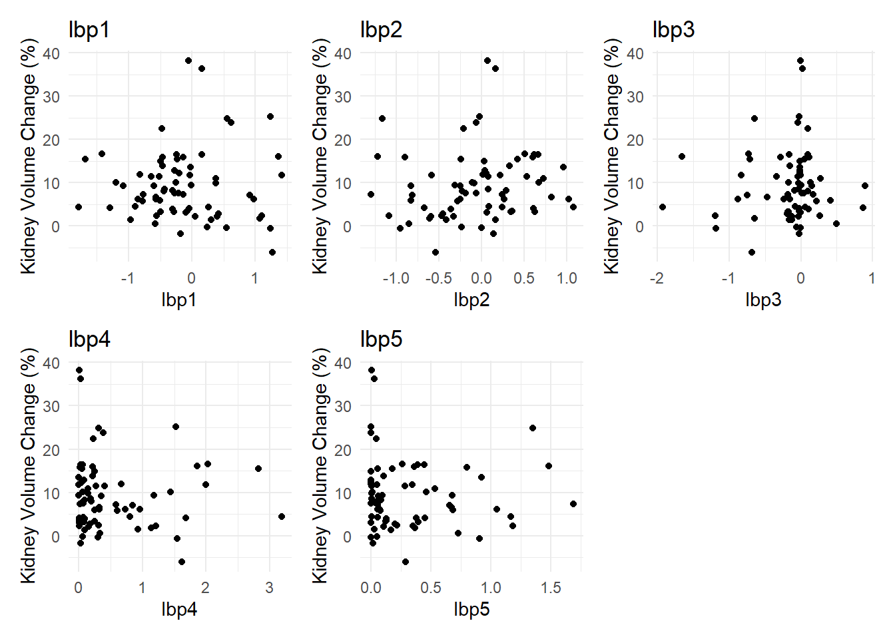
lbp5 looks logarithmic.
# Create log variable
data1_train <- data1_train |>
mutate(lbp5_log = log(lbp5))
#| # Make plots
distr_plots(data1_train, "lbp5_log", 15)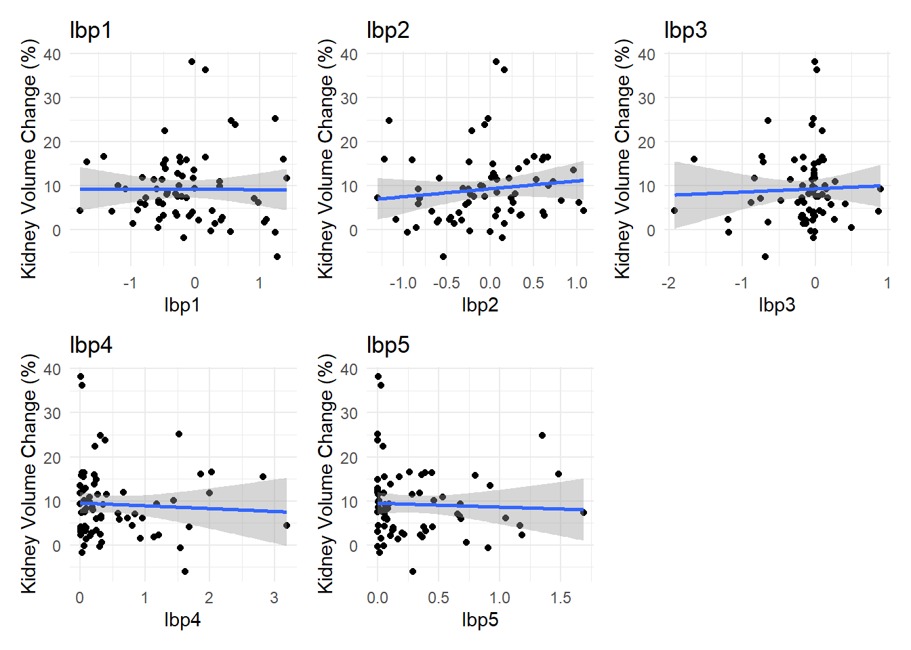
# Create variable
data1_train <- data1_train |>
mutate(lbp5_log = log(lbp5))# Use bestNormalize R package to select the best transformation
BNObject <- bestNormalize(data1_train$lbp5)
BNObjectBest Normalizing transformation with 54 Observations
Estimated Normality Statistics (Pearson P / df, lower => more normal):
- arcsinh(x): 2.6007
- Box-Cox: 1.568
- Center+scale: 2.5867
- Double Reversed Log_b(x+a): 3.0687
- Exp(x): 3.346
- Log_b(x+a): 1.6487
- orderNorm (ORQ): 1.8627
- sqrt(x + a): 1.9
- Yeo-Johnson: 2.0653
Estimation method: Out-of-sample via CV with 10 folds and 5 repeats
Based off these, bestNormalize chose:
Standardized Box Cox Transformation with 54 nonmissing obs.:
Estimated statistics:
- lambda = 0.1567344
- mean (before standardization) = -1.795011
- sd (before standardization) = 1.298534 Looks better, and we confirm that the log transform performs the best.
Summary
Log transform is the best for lbp5.
We determined that the following variables were approximately normally distributed after performing the transformations below: - kidvol_base_log - kidvol_change_log (this will be considered, but likely not used) - geom1_yeo - geom2_yeo - gabor2_yeo - gabor4_log - glcm2_log - txti4_log - txti5_log - lbp4_log - lbp5_log
These variables will be used for all comparisons moving forward to ensure we meet the assumption of linearity for a linear regression model.
gabor5 is not normal even after transforming.
We also eliminated 2 outlier/possible erroneous values in the form of patients, 48 and 52.
Correlation Matrix I
To assess for the best engineering of features and select the most promising covariates for this predictive model, I will create the following correlation matrices.
- With unaltered features & engineered features
- With averages and interactions to aggregate features from the same class
- With squared features
This process should uncover hidden relationships between features that are not immediately obvious (such as a squared feature being a significant predictor, but not in its original form).
This first matrix will contain the unaltered features in their original form, as well as the engineered features as determined by examination of distributions.
# Control matrix for better output
matrix_order <- c("kidvol_base", "kidvol_change", "kidvol_change_log", "progression", "geom1", "geom1_yeo", "geom2", "geom2_yeo", "gabor1", "gabor2", "gabor2_yeo", "gabor3", "gabor4", "gabor4_log", "gabor5", "glcm1", "glcm2", "glcm2_log", "txti1", "txti2", "txti3", "txti4", "txti4_log", "txti5", "txti5_log", "lbp1", "lbp2", "lbp3", "lbp4", "lbp4_log", "lbp5", "lbp5_log")
# Clean the output by making a trimmed dataset excluding extaneous variables
data_for_matrix <- data1_train |>
select(matrix_order)Warning: Using an external vector in selections was deprecated in tidyselect 1.1.0.
ℹ Please use `all_of()` or `any_of()` instead.
# Was:
data %>% select(matrix_order)
# Now:
data %>% select(all_of(matrix_order))
See <https://tidyselect.r-lib.org/reference/faq-external-vector.html>.# We factored our variables at the start. To make a correlation matrix we must reconvert those back to numeric
data_for_matrix <- data.frame(lapply(data_for_matrix, function(x) if (is.factor(x)) as.numeric(x) else x))
# Make a correlation matrix with all variables of the trimmed data set
correlation_matrix <- cor(data_for_matrix, use = "complete.obs")
# Plot correlation matrix
corrplot(correlation_matrix, method = "color", addCoef.col = "black", number.cex = 0.4, insig = "blank")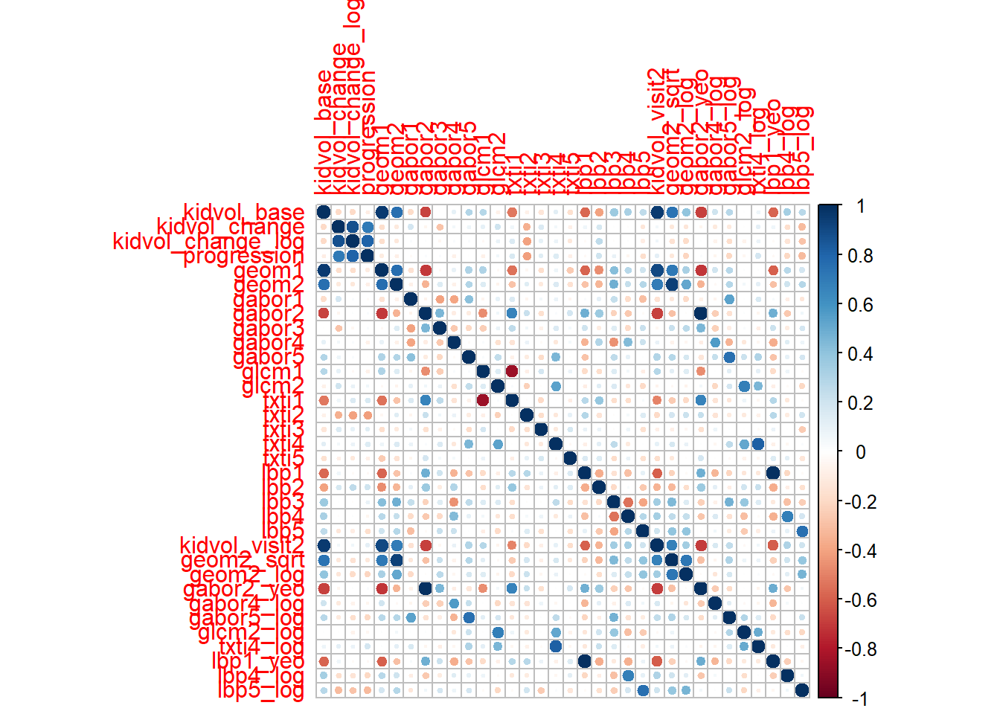
From this plot we can see a few relationships between our original and transformed features.
Main Observations
geom1 (r = -0.17)and geom2_yeo (r = -0.15) have about equal correlation with kidvol_change
None of the original or transformed gabor features are correlated to change in kidvol_change_log.
Interestingly, gabor3 appears to have a strong correlation to the untransformed kidvol_change, but not with kidvol_change_log. Let’s assess.
# Create plot
ggplot(data1_train, aes(x = gabor3, y = kidvol_change)) +
geom_smooth(method = "lm") +
geom_point() +
labs(title = "Change in Kidney Volume by Gabor3",
x = "Gabor3",
y = "Change in Kidney Volume (%)") +
theme_minimal()`geom_smooth()` using formula = 'y ~ x'This appears to be driven entirely by that outlier patient on the far left.
We previously determined that patients 37 and 51 were outliers on the boxplots on kidvol_change.
Let’s assess how this relationship changes after removing them.
# Remove outlier patients on kidvol change
data_out_rem <- data1_train |>
filter(!Subject_ID %in% c(37,51))
# Plot
ggplot(data_out_rem, aes(x = gabor3, y = kidvol_change)) +
geom_smooth(method = "lm") +
geom_point() +
labs(title = "Change in Kidney Volume by Gabor3",
x = "Gabor3",
y = "Change in Kidney Volume (%)") +
theme_minimal()`geom_smooth()` using formula = 'y ~ x'
The relationship now looks appropriately linear when these outlier patients are removed.
We can also see that taking the log of the change in kidney volume reduces the influence of these outliers and makes the correlation non significant
# Create plot
ggplot(data1_train, aes(x = gabor3, y = kidvol_change_log)) +
geom_smooth(method = "lm") +
geom_point() +
labs(title = "Change in Log Kidney Volume by Gabor3",
x = "Gabor3",
y = "Change in Log Kidney Volume (%)") +
theme_minimal()`geom_smooth()` using formula = 'y ~ x'Warning: Removed 1 row containing non-finite outside the scale range
(`stat_smooth()`).Warning: Removed 1 row containing missing values or values outside the scale range
(`geom_point()`).
Note
Note: Patients 37 and 51 may be outliers and will need to be assessed using leverage and influence after the final model is fit!
None of the MRI features from the gray level co-occurence matrix were strongly correlated with kidvol_change.
txti2 is a strong predictor of change in kidvol regardless if whether kidvol is transformed or not.
# Create plot
ggplot(data1_train, aes(x = txti2, y = kidvol_change)) +
geom_smooth(method = "lm") +
geom_point() +
labs(title = "Change in Log Kidney Volume by Txti2",
x = "Txti2",
y = "Change in Log Kidney Volume (%)") +
theme_minimal()`geom_smooth()` using formula = 'y ~ x'txti2 is a strong predictor of change in kidney volume!
Lbp2
lbp2 is weakly correlated to change in kidney volume.
# Create plot
ggplot(data1_train, aes(x = lbp2, y = kidvol_change)) +
geom_smooth(method = "lm") +
geom_point() +
labs(title = "Change in Log Kidney Volume by lbp2",
x = "lbp2",
y = "Change in Log Kidney Volume (%)") +
theme_minimal()`geom_smooth()` using formula = 'y ~ x'model <- lm(kidvol_change ~ lbp2, data = data1_train)
summary(model)
Call:
lm(formula = kidvol_change ~ lbp2, data = data1_train)
Residuals:
Min 1Q Median 3Q Max
-11.584 -5.786 -1.331 2.369 28.519
Coefficients:
Estimate Std. Error t value Pr(>|t|)
(Intercept) 9.502 1.085 8.754 0.00000000000837 ***
lbp2 2.343 1.945 1.205 0.234
---
Signif. codes: 0 '***' 0.001 '**' 0.01 '*' 0.05 '.' 0.1 ' ' 1
Residual standard error: 7.926 on 52 degrees of freedom
Multiple R-squared: 0.02716, Adjusted R-squared: 0.008455
F-statistic: 1.452 on 1 and 52 DF, p-value: 0.2337Lbp4
lbp4 after log transforming is weakly associated with change in kidney volume, but not strong enough to be significant.
# Create plot
ggplot(data1_train, aes(x = lbp4_log, y = kidvol_change)) +
geom_smooth(method = "lm") +
geom_point() +
labs(title = "Change in Log Kidney Volume by Lbp4",
x = "Log Lbp4",
y = "Change in Kidney Volume (%)") +
theme_minimal()`geom_smooth()` using formula = 'y ~ x'Lbp Log
lbp5_log is strongly correlated to change in kidney volume.
# Create plot
ggplot(data1_train, aes(x = lbp5_log, y = kidvol_change)) +
geom_smooth(method = "lm") +
geom_point() +
labs(title = "Change in Log Kidney Volume by Log Lbp5",
x = "Log Lbp5",
y = "Change in Log Kidney Volume (%)") +
theme_minimal()`geom_smooth()` using formula = 'y ~ x'We have a pretty strong negative relationship here, looks like it is slightly driven by those two outlier patients.
Summary
The features that are most promising as covariates at this point are:
geom2_yeogabor3txt12lbp5_log
Feature Engineering II
Averages and Interaction Terms
We saw in the correlation matrix that both geom1 and geom2 had pretty even correlations with change in kidney volume.
In the interest of discovering underlying patterns (and minimizing the number of features we have, since we have a limit of 5 based on our sample size), I will attempt to collapse these two variables by
- Taking their average
- Taking their interaction term
I will also do the same for lbp2, and lbp5_log, which were correlated with the outcome.
Create Average and Interaction Terms
# Create average and interaction terms
data1_train <- data1_train |>
mutate(geom_avg = (geom1_yeo + geom2_yeo)/2,
geom_int = geom1_yeo*geom2_yeo,
lbp_avg = (lbp2 + lbp5_log),
lbp_int = lbp2*lbp5_log)Correlation Matrix II
Now we can rerun the correlation matrix and examine how those relationships changed
# Control matrix for better output
matrix_order <- c("kidvol_base", "kidvol_change", "kidvol_change_log", "progression", "geom1", "geom1_yeo", "geom2", "geom2_yeo", "geom_avg", "geom_int", "lbp1", "lbp2", "lbp3", "lbp4", "lbp4_log", "lbp5", "lbp5_log", "lbp_avg", "lbp_int")
# Clean the output by making a trimmed dataset excluding extaneous variables
data_for_matrix <- data1_train |>
select(matrix_order)
# We factored our variables at the start. To make a correlation matrix we must reconvert those back to numeric
data_for_matrix <- data.frame(lapply(data_for_matrix, function(x) if (is.factor(x)) as.numeric(x) else x))
# Make a correlation matrix with all variables of the trimmed data set
correlation_matrix <- cor(data_for_matrix, use = "complete.obs")
# Plot correlation matrix
corrplot(correlation_matrix, method = "color", addCoef.col = "black", number.cex = 0.6)Main Observations
geom_avg (r = 0.20) has a higher correlation coefficient than geom1_yeo and geom2_yeo alone, and will thus be used as an aggregate covariate to capture the geometry of the MRIs going forward.
# Create plot
ggplot(data1_train, aes(x = geom_avg, y = kidvol_change)) +
geom_smooth(method = "lm") +
geom_point() +
labs(title = "Change in Kidney Volume by geom_avg",
x = "geom_avg",
y = "Change in Kidney Volume (%)") +
theme_minimal()`geom_smooth()` using formula = 'y ~ x'Notably, this could be driven by those two outliers as mentioned previously.
The average and interaction terms do not perform better than lbp5_log alone.
Summary
geom_avg increases the r by 0.03 over the individual non-combined features, and will be chosen as a candidate covariate.
lbp_avg does not perform better than lbp5_log alone, and thus lbp5_log will be chosen as a candidate covariate in the final model.
Feature Engineering III
Quadratic Terms
Finally, we will consider quadratic terms for each feature.
# Create function to square specified columns and rename the new variables
square_selected_variables <- function(df, columns) {
df <- df %>%
mutate(across(all_of(columns), ~ .^2, .names = "{.col}_square"))
return(df)
}
# Choose columns to get squared
columns <- data1_train |>
select(geom1, geom1_yeo, geom2, geom2_yeo, geom_avg, geom_int, gabor1, gabor2, gabor2_yeo, gabor3, gabor4, gabor4_log, gabor5, glcm1, glcm2, glcm2_log, txti1, txti2, txti3, txti4, txti4_log, txti5, txti5_log, lbp1, lbp2, lbp3, lbp4, lbp4_log, lbp5, lbp5_log, lbp_avg, lbp_int) |>
colnames()
# Square selected variables
data_square <- square_selected_variables(data1_train, columns)
# Control matrix for better output
matrix_order <- c("kidvol_base", "kidvol_change", "kidvol_change_log", "progression", "geom1_square", "geom1_yeo_square", "geom2_square", "geom2_yeo_square", "geom_avg_square", "geom_int_square", "gabor1_square", "gabor2_square", "gabor2_yeo_square", "gabor3_square", "gabor4_square", "gabor4_log_square", "gabor5_square", "glcm1_square", "glcm2_square", "glcm2_log_square", "txti1_square", "txti2_square", "txti3_square", "txti4_square", "txti4_log_square", "txti5_square", "txti5_log_square", "lbp1_square", "lbp2_square", "lbp3_square", "lbp4_square", "lbp4_log_square", "lbp5_square", "lbp5_log_square", "lbp_avg_square", "lbp_int_square")
# Clean the output by making a trimmed dataset excluding extraneous variables
data_for_matrix2 <- data_square |>
select(matrix_order)
# We factored our variables at the start. To make a correlation matrix we must reconvert those back to numeric
data_for_matrix2 <- data.frame(lapply(data_for_matrix2, function(x) if (is.factor(x)) as.numeric(x) else x))
# Make a correlation matrix with all variables of the trimmed data set
correlation_matrix <- cor(data_for_matrix2, use = "complete.obs")
# Plot correlation matrix
corrplot(correlation_matrix, method = "color", addCoef.col = "black", number.cex = 0.5)Main Observations
Gabor3
The correlation coefficient for gabor3_square is higher than gabor3.
ggplot(data_square, aes(x = gabor3_square, y = kidvol_change)) +
geom_point() +
geom_smooth(method = "lm", formula = y ~ poly(x, 2), se = FALSE)Let’s compare if we remove those outliers
ggplot(data_out_rem, aes(x = gabor3**2, y = kidvol_change)) +
geom_point() +
geom_smooth(method = "lm", formula = y ~ poly(x, 2), se = FALSE)This appears to be driven by that outlier patient.
glcm2_square has a strong correlation (r = 0.31). Let’s examine.
# Create the plot
ggplot(data_square, aes(x = glcm2_square, y = kidvol_change)) +
geom_point() +
geom_smooth(method = "lm")`geom_smooth()` using formula = 'y ~ x'# Check the model
model <- lm(kidvol_change ~ glcm2**2, data = data1_train)
summary(model)
Call:
lm(formula = kidvol_change ~ glcm2^2, data = data1_train)
Residuals:
Min 1Q Median 3Q Max
-11.657 -5.766 -1.591 3.782 29.290
Coefficients:
Estimate Std. Error t value Pr(>|t|)
(Intercept) 7.8715892217 1.4117081716 5.576 0.000000892 ***
glcm2 0.0000013538 0.0000008435 1.605 0.115
---
Signif. codes: 0 '***' 0.001 '**' 0.01 '*' 0.05 '.' 0.1 ' ' 1
Residual standard error: 7.844 on 52 degrees of freedom
Multiple R-squared: 0.0472, Adjusted R-squared: 0.02888
F-statistic: 2.576 on 1 and 52 DF, p-value: 0.1146This could be driven by the outlier, but we will include glcm2_square as a covariate during model selection.
Summary
GLCM2_square will be considered as a potential covariate during model selection.
Feature Scaling
Before we perform our regression, we must standardize our variables to place them all on the same scale so that they contribute equally to the model.
This also makes it easier for the gradient descent process to converge faster and more efficiently.

Perform Scaling
# Z-score scale variables
data1_train <- data1_train |>
mutate(geom_avg_scale = scale(geom_avg),
gabor3_scale = scale(gabor3),
txti2_scale = scale(txti2),
lbp5_log_scale = scale(lbp5_log),
glcm2_square = glcm2**2,
glcm2_square_scale = scale(glcm2_square))Linear Regression
Background
Cost Function
The cost function in a linear regression is Mean Square Error (MSE):
\[ \text{MSE} = \frac{1}{n} \sum_{i=1}^{n} (y_i - \hat{y}_i)^2 \]
Where y is the actual change in outcome variable and y-hat is the predicted change, and n is the number of observations.
Mapping Function
In the case of linear regression, the mapping function is essentially each beta in the model.
Goal
The goal is to select a mapping function that minimizes the cost function and thereby produces the best predictions of the outcome variable.
Gradient Descent
The purpose of gradient descent is to find a mapping function that minimizes the cost function.
The general process of gradient descent is:
Initialize the betas (start with 0’s or small values)
Predict the outcome variable
Calculate the error
Calculate the gradient (The direction and magnitude of the steepest increase in the cost function)
Adjust the betas in the opposite direction of the gradient
Iterate (repeat the process until the cost function converges on a minimum value
Performing the Predictive Model
This website used for coding guidance
Model 1A: Baseline Kidney Volume
To answer the researcher’s first question, we will run a predictive model that uses the baseline height-corrected total kidney volume to predict percent change in kidney volume.
\[ Kidney Volume Change = 𝛽_0 + 𝛽_{Log Kidney Volume Baseline} + e \]
We will be using the caret package in R to perform the linear regression using 5-fold cross validation.
set.seed(123)
# Set up a 5-fold cross validation
tc <- trainControl(method = "cv", number = 5)
# Perform the linear regression using 5-fold CV
model1a <- train(kidvol_change ~ log(kidvol_base),
data = data,
method = "lm",
trControl = tc)
# Get RMSE
model1aLinear Regression
71 samples
1 predictor
No pre-processing
Resampling: Cross-Validated (5 fold)
Summary of sample sizes: 56, 56, 58, 58, 56
Resampling results:
RMSE Rsquared MAE
8.096326 0.05257111 6.192124
Tuning parameter 'intercept' was held constant at a value of TRUE# Get model coefficients
summary(model1a)
Call:
lm(formula = .outcome ~ ., data = dat)
Residuals:
Min 1Q Median 3Q Max
-16.166 -5.741 -1.240 3.758 27.000
Coefficients:
Estimate Std. Error t value Pr(>|t|)
(Intercept) 26.582 11.698 2.272 0.0262 *
`log(kidvol_base)` -2.987 2.028 -1.473 0.1453
---
Signif. codes: 0 '***' 0.001 '**' 0.01 '*' 0.05 '.' 0.1 ' ' 1
Residual standard error: 8.176 on 69 degrees of freedom
Multiple R-squared: 0.03049, Adjusted R-squared: 0.01644
F-statistic: 2.17 on 1 and 69 DF, p-value: 0.1453# Examine RSME and R Squared of each fold
pretty_print(model1a$resample)| RMSE | Rsquared | MAE | Resample |
|---|---|---|---|
| 9.164071 | 0.1296555 | 6.966941 | Fold1 |
| 8.938726 | 0.1208880 | 6.144274 | Fold2 |
| 9.002214 | 0.0078560 | 7.279776 | Fold3 |
| 6.777802 | 0.0009846 | 5.651400 | Fold4 |
| 6.598816 | 0.0034716 | 4.918228 | Fold5 |
The model has an RMSE of 8.10.
Visualization
Actual vs Predicted Values
# Save predicted valuest to data set
data$predictions1a <- predict(model1a, newdata = data)
# Visualize predicted vs actual values
ggplot(data, aes(x = kidvol_change, y = predictions1a)) +
geom_point() +
geom_abline(intercept = 0, slope = 1, color = "blue", linetype = "dashed") +
theme_minimal() +
labs(title = "Predicted vs Actual Values for Baseline Kidney Volume",
x = "Actual Values",
y = "Predicted Values")In a well performing model, the dots are close to a straight line (the blue dashed line), which would indicate perfect overlap between predicted and actual values.
Residuals
# Calculate the residuals
data$residuals1a <- data$kidvol_change - data$predictions1a
# Plot
ggplot(data, aes(x = predictions1a, y = residuals1a)) +
geom_point() +
geom_hline(yintercept = 0, color = "blue", linetype = "dashed") +
theme_minimal() +
labs(title = "Residuals for Baseline Kidney Volume",
x = "Predicted Values",
y = "Residuals")There’s some pretty large differences in the predictions here, with some patients having predicted values that are 15% off or greater!
QQ Plot
# Plot QQ Plot
ggplot(data, aes(sample = residuals1a)) +
geom_qq() +
geom_qq_line() +
theme_minimal() +
labs(title = "QQ Plot of Model 1A")The QQ plot is almost normal, but not quite.
Histogram of Residuals
# Create histogram of residuals
ggplot(data, aes(x = residuals1a)) +
geom_histogram(bins = 20) +
labs(title = "Histogram of Residuals for Model 1A",
x = "Residuals",
y = "Count") +
theme_minimal()The residuals are almost normally distributed, but not quite.
Summary
the RMSE of the model including kidvol_base alone is8.11
The model does not perform too well, when looking at the plots of the predicted vs actual values.
The assumption of normality is almost, but not quite, met.
Model 2: MRI Features
To answer the researcher’s second question, we will run a predictive model that uses only MRI image features to predict percent change in kidney volume at year 3.
\[ Kidney Volume Change = 𝛽_0 + 𝛽_{Image Feature 1} + 𝛽_{Image Feature 2}+ ... + e \]
Model Selection
Model selection will be performed on Fold 1 to avoid data snooping on the test set.
The potential scaled covariates for our final model after feature engineering and interactive variable selection are:
geom_avggabor3txti2lbp5_logglcm2_square
We will perform model selection using backwards elimination and BIC.
Backwards Elimination
# First build the model with all variables
model1b <- lm(kidvol_change ~ geom_avg_scale + gabor3_scale + txti2_scale + lbp5_log_scale + glcm2_square_scale, data = data1_train)
summary(model1b)
Call:
lm(formula = kidvol_change ~ geom_avg_scale + gabor3_scale +
txti2_scale + lbp5_log_scale + glcm2_square_scale, data = data1_train)
Residuals:
Min 1Q Median 3Q Max
-17.458 -4.477 -1.072 2.927 18.913
Coefficients:
Estimate Std. Error t value Pr(>|t|)
(Intercept) 9.3544 0.9681 9.662 0.00000000000077 ***
geom_avg_scale -0.5476 1.0569 -0.518 0.6067
gabor3_scale -1.8407 1.0054 -1.831 0.0733 .
txti2_scale -2.0236 1.0275 -1.970 0.0547 .
lbp5_log_scale -1.0410 1.0918 -0.953 0.3451
glcm2_square_scale 1.9041 1.0320 1.845 0.0712 .
---
Signif. codes: 0 '***' 0.001 '**' 0.01 '*' 0.05 '.' 0.1 ' ' 1
Residual standard error: 7.114 on 48 degrees of freedom
Multiple R-squared: 0.2765, Adjusted R-squared: 0.2011
F-statistic: 3.668 on 5 and 48 DF, p-value: 0.006844# Perform backward elimination
ols_step_backward_sbc(model1b)
Stepwise Summary
-----------------------------------------------------------------------------
Step Variable AIC SBC SBIC R2 Adj. R2
-----------------------------------------------------------------------------
0 Full Model 372.792 386.715 221.016 0.27647 0.20110
1 geom_avg_scale 371.093 383.027 218.848 0.27242 0.21303
2 lbp5_log_scale 370.716 380.661 218.098 0.25023 0.20524
-----------------------------------------------------------------------------
Final Model Output
------------------
Model Summary
----------------------------------------------------------------
R 0.500 RMSE 6.828
R-Squared 0.250 MSE 46.621
Adj. R-Squared 0.205 Coef. Var 75.855
Pred R-Squared -0.235 AIC 370.716
MAE 5.016 SBC 380.661
----------------------------------------------------------------
RMSE: Root Mean Square Error
MSE: Mean Square Error
MAE: Mean Absolute Error
AIC: Akaike Information Criteria
SBC: Schwarz Bayesian Criteria
ANOVA
-------------------------------------------------------------------
Sum of
Squares DF Mean Square F Sig.
-------------------------------------------------------------------
Regression 840.194 3 280.065 5.562 0.0023
Residual 2517.532 50 50.351
Total 3357.727 53
-------------------------------------------------------------------
Parameter Estimates
-----------------------------------------------------------------------------------------------
model Beta Std. Error Std. Beta t Sig lower upper
-----------------------------------------------------------------------------------------------
(Intercept) 9.354 0.966 9.688 0.000 7.415 11.294
gabor3_scale -2.114 0.981 -0.266 -2.155 0.036 -4.084 -0.143
txti2_scale -2.200 1.016 -0.276 -2.165 0.035 -4.240 -0.159
glcm2_square_scale 2.076 1.018 0.261 2.040 0.047 0.032 4.121
-----------------------------------------------------------------------------------------------geom_avg and lbp5_log are removed based on BIC. AIC prefers the model with lbp5_log
However, we must note that we suspect patients 37 and 51 to be outliers on total kidney volume change, and we saw previously that the correlations for gabor3 and glcm2_square may be being driven by these outlier patients.
Perform 5-Fold Cross Validation
The final model selected via backwards elimination includes gabor3, txti2, and glcm2_square
set.seed(123)
# Create variables for original data set
data <- data |>
mutate(gabor3_scale = scale(gabor3),
txti2_scale = scale(txti2),
glcm2_square_scale = scale(glcm2**2),
lbp5_log_scale = scale(log(lbp5)),
geom_avg_scale = scale(geom1+geom2)/2)
# Perform the linear regression using 5-fold CV
model1b <- train(kidvol_change ~ gabor3_scale + txti2_scale + glcm2_square_scale,
data = data,
method = "lm",
trControl = tc)
# Get RMSE
model1bLinear Regression
71 samples
3 predictor
No pre-processing
Resampling: Cross-Validated (5 fold)
Summary of sample sizes: 56, 56, 58, 58, 56
Resampling results:
RMSE Rsquared MAE
9.032055 0.1690167 6.528863
Tuning parameter 'intercept' was held constant at a value of TRUE# Get model coefficients
summary(model1b)
Call:
lm(formula = .outcome ~ ., data = dat)
Residuals:
Min 1Q Median 3Q Max
-16.630 -4.574 -1.414 3.490 28.925
Coefficients:
Estimate Std. Error t value Pr(>|t|)
(Intercept) 9.4106 0.9552 9.852 0.0000000000000117 ***
gabor3_scale 0.1500 0.9800 0.153 0.8788
txti2_scale -2.2213 0.9844 -2.256 0.0273 *
glcm2_square_scale 0.8494 0.9690 0.877 0.3838
---
Signif. codes: 0 '***' 0.001 '**' 0.01 '*' 0.05 '.' 0.1 ' ' 1
Residual standard error: 8.049 on 67 degrees of freedom
Multiple R-squared: 0.08767, Adjusted R-squared: 0.04681
F-statistic: 2.146 on 3 and 67 DF, p-value: 0.1026The RMSE is 9.03, worse than the model with kidvol_base alone.
Visualization
Actual vs Predicted Values
# Save predicted valuest to data set
data$predictions1b <- predict(model1b, newdata = data)
# Visualize predicted vs actual values
ggplot(data, aes(x = kidvol_change, y = predictions1b)) +
geom_point() +
geom_abline(intercept = 0, slope = 1, color = "blue", linetype = "dashed") +
theme_minimal() +
labs(title = "Predicted vs Actual Values for MRI Features",
x = "Actual Values",
y = "Predicted Values")Residuals
# Calculate the residuals
data$residuals1b <- data$kidvol_change - data$predictions1b
# Plot
ggplot(data, aes(x = predictions1a, y = residuals1b)) +
geom_point() +
geom_hline(yintercept = 0, color = "blue", linetype = "dashed") +
theme_minimal() +
labs(title = "Residuals for MRI Features",
x = "Predicted Values",
y = "Residuals")Our residuals are smaller in this model compared to modela 1A using kidvol_base alone.
QQ Plot
# Plot QQ Plot
ggplot(data, aes(sample = residuals1b)) +
geom_qq() +
geom_qq_line() +
theme_minimal() +
labs(title = "QQ Plot of Model 1B")Histogram of Residuals
# Create histogram of residuals
ggplot(data, aes(x = residuals1b)) +
geom_histogram(bins = 20) +
labs(title = "Histogram of Residuals for Model 1B",
x = "Residuals",
y = "Count") +
theme_minimal()Leverage and Influence
# Extract model
model1b_ext <- model1b$finalModel
# Influence plot
influence_measures <- influencePlot(model1b_ext, main = "Influence Plot",
sub = "Circle size is proportional to Cook's Distance")# Get row numbers of outliers
influence_measures StudRes Hat CookD
X2 3.205536 0.3120826 1.0236809
X8 4.481013 0.1736179 0.8208826
X9 3.131995 0.3212338 1.0257341
X35 -1.208289 0.4497401 0.2962813We have four clear outliers that are points of high leverage and influence.
Let’s identify them
# Identify outlier patients
data[c(2, 8, 9, 35),]# A tibble: 4 × 34
Subject_ID geom1 geom2 gabor1 gabor2 gabor3 gabor4 gabor5 glcm1
<dbl> <dbl> <dbl> <dbl> <dbl> <dbl> <dbl> <dbl> <dbl>
1 51 -43.4 1883. 0.00474 0.0545 0.000258 0.0000224 2.97e-3 2455.
2 37 -3.86 14.9 0.262 -0.198 -0.0520 0.0687 3.93e-2 872.
3 52 77.1 5937. 0.460 0.156 0.0716 0.211 2.42e-2 -638.
4 48 -124. 15442. -0.163 0.00177 -0.000288 0.0266 3.12e-6 2545.
# ℹ 25 more variables: glcm2 <dbl>, txti1 <dbl>, txti2 <dbl>, txti3 <dbl>,
# txti4 <dbl>, txti5 <dbl>, lbp1 <dbl>, lbp2 <dbl>, lbp3 <dbl>, lbp4 <dbl>,
# lbp5 <dbl>, kidvol_base <dbl>, kidvol_visit2 <dbl>, progression <fct>,
# kidvol_change <dbl>, fold_number <chr>, predictions1a <dbl>,
# residuals1a <dbl>, gabor3_scale <dbl[,1]>, txti2_scale <dbl[,1]>,
# glcm2_square_scale <dbl[,1]>, lbp5_log_scale <dbl[,1]>,
# geom_avg_scale <dbl[,1]>, predictions1b <dbl>, residuals1b <dbl>As predicted, patients 37 and 52 are points of high leverage and influence.
Also as identified before, patients 48 and 52 are points of high leverage and influence, which can be denoted by their absurdly high values for lbp1 and lbp2.
Since we previously identified that certain correlations such as with gabor3 and glcm2_square were being driven by these outlier patients, we will re-run model selection again using backwards elimination, with these patients removed.
Backwards Elimination II
We will perform backwards elimination again with outlier patients removed.
We can expect gabor3 and glcm2_square to be removed since their correlations were driven by these outliers, as identified in earlier plots.
# Remove outlier patients from data set
data1_train <- data1_train |>
filter(!Subject_ID %in% c(37, 48, 51, 52))
# Create model
model1b2 <- lm(kidvol_change ~ geom_avg_scale + gabor3_scale + txti2_scale + lbp5_log_scale + glcm2_square_scale, data = data1_train)
# Examine Model Summary
summary(model1b2)
Call:
lm(formula = kidvol_change ~ geom_avg_scale + gabor3_scale +
txti2_scale + lbp5_log_scale + glcm2_square_scale, data = data1_train)
Residuals:
Min 1Q Median 3Q Max
-9.3899 -3.2977 -0.9786 2.4046 15.9736
Coefficients:
Estimate Std. Error t value Pr(>|t|)
(Intercept) 8.1922 0.7809 10.491 0.0000000000000867 ***
geom_avg_scale -0.1844 0.8252 -0.223 0.82416
gabor3_scale 0.9018 0.9673 0.932 0.35609
txti2_scale -2.1787 0.8004 -2.722 0.00913 **
lbp5_log_scale -0.9964 0.8565 -1.163 0.25073
glcm2_square_scale -1.2907 1.1787 -1.095 0.27918
---
Signif. codes: 0 '***' 0.001 '**' 0.01 '*' 0.05 '.' 0.1 ' ' 1
Residual standard error: 5.538 on 46 degrees of freedom
Multiple R-squared: 0.1898, Adjusted R-squared: 0.1017
F-statistic: 2.155 on 5 and 46 DF, p-value: 0.07558# Perform backward elimination
ols_step_forward_sbc(model1b2)
Stepwise Summary
--------------------------------------------------------------------------
Step Variable AIC SBC SBIC R2 Adj. R2
--------------------------------------------------------------------------
0 Base Model 334.154 338.056 186.402 0.00000 0.00000
1 txti2_scale 328.649 334.503 181.305 0.13439 0.11708
--------------------------------------------------------------------------
Final Model Output
------------------
Model Summary
---------------------------------------------------------------
R 0.367 RMSE 5.384
R-Squared 0.134 MSE 28.989
Adj. R-Squared 0.117 Coef. Var 66.297
Pred R-Squared 0.067 AIC 328.649
MAE 4.093 SBC 334.503
---------------------------------------------------------------
RMSE: Root Mean Square Error
MSE: Mean Square Error
MAE: Mean Absolute Error
AIC: Akaike Information Criteria
SBC: Schwarz Bayesian Criteria
ANOVA
-------------------------------------------------------------------
Sum of
Squares DF Mean Square F Sig.
-------------------------------------------------------------------
Regression 234.037 1 234.037 7.763 0.0075
Residual 1507.420 50 30.148
Total 1741.457 51
-------------------------------------------------------------------
Parameter Estimates
----------------------------------------------------------------------------------------
model Beta Std. Error Std. Beta t Sig lower upper
----------------------------------------------------------------------------------------
(Intercept) 8.344 0.762 10.954 0.000 6.814 9.874
txti2_scale -2.136 0.767 -0.367 -2.786 0.008 -3.677 -0.596
----------------------------------------------------------------------------------------As predicted, when excluding these outlier patients, gabor3 and glcm2_square are no longer significant.
The only selected now using BIC is txti2!
Let’s perform 5-fold CV again using this model.
Perform Regression with 5-Fold Cross Validation
set.seed(123)
# Set up a 5-fold cross validation
tc <- trainControl(method = "cv", number = 5)
# Perform the linear regression using 5-fold CV
model1b2 <- train(kidvol_change ~ txti2_scale,
data = data,
method = "lm",
trControl = tc)
# Get RMSE
model1b2Linear Regression
71 samples
1 predictor
No pre-processing
Resampling: Cross-Validated (5 fold)
Summary of sample sizes: 56, 56, 58, 58, 56
Resampling results:
RMSE Rsquared MAE
7.889404 0.1782089 5.735432
Tuning parameter 'intercept' was held constant at a value of TRUE# Get model coefficients
summary(model1b2)
Call:
lm(formula = .outcome ~ ., data = dat)
Residuals:
Min 1Q Median 3Q Max
-16.830 -4.484 -1.469 3.405 28.129
Coefficients:
Estimate Std. Error t value Pr(>|t|)
(Intercept) 9.4106 0.9469 9.938 0.00000000000000603 ***
txti2_scale -2.2819 0.9537 -2.393 0.0194 *
---
Signif. codes: 0 '***' 0.001 '**' 0.01 '*' 0.05 '.' 0.1 ' ' 1
Residual standard error: 7.979 on 69 degrees of freedom
Multiple R-squared: 0.07662, Adjusted R-squared: 0.06324
F-statistic: 5.725 on 1 and 69 DF, p-value: 0.01945The RMSE is now 7.89, slightly lower than with kidvol_base_log alone!
This model predicts 17.8% of the variance in kidvol_change.
Visualization
Actual vs Predicted Values
# Save predicted valuest to data set
data$predictions1b2 <- predict(model1b2, newdata = data)
# Visualize predicted vs actual values
ggplot(data, aes(x = kidvol_change, y = predictions1b2)) +
geom_point() +
geom_abline(intercept = 0, slope = 1, color = "blue", linetype = "dashed") +
theme_minimal() +
labs(title = "Predicted vs Actual Values for TXTI2",
x = "Actual Values",
y = "Predicted Values")The predicted models are still not that class to the actual values.
Residuals
# Calculate the residuals
data$residuals1b2 <- data$kidvol_change - data$predictions1b2
# Plot residuals
ggplot(data, aes(x = predictions1b2, y = residuals1b2)) +
geom_point() +
geom_hline(yintercept = 0, color = "blue", linetype = "dashed") +
theme_minimal() +
labs(title = "Residuals for TXTI2",
x = "Predicted Values",
y = "Residuals")The residuals still look pretty large.
QQ Plot
# Plot QQ Plot
ggplot(data, aes(sample = residuals1b2)) +
geom_qq() +
geom_qq_line() +
theme_minimal() +
labs(title = "QQ Plot of TXTI2")Histogram of Residuals
# Create histogram of residuals
ggplot(data, aes(x = residuals1b2)) +
geom_histogram(bins = 20) +
labs(title = "Histogram of Residuals for TXTI2",
x = "Residuals",
y = "Count") +
theme_minimal()
The residuals are approximately normally distributed presumably they would be with a larger sample size.
Leverage and Influence
# Extract model
model1b2_ext <- model1b2$finalModel
# Influence plot
influence_measures <- influencePlot(model1b2_ext, main = "Influence Plot",
sub = "Circle size is proportional to Cook's Distance")# Get row numbers of outliers
influence_measures StudRes Hat CookD
X2 3.2456183 0.04026201 0.194132762
X8 3.9015471 0.01524453 0.097687694
X9 2.6679528 0.04214891 0.143853321
X30 -0.6534002 0.09497256 0.022588479
X57 0.1562966 0.12320220 0.001740893We no longer have outliers in this model as assessed by cutoffs using leverage and influence.
Model 1C
Baseline Kidney Volume and MRI Features
To answer the researcher’s third question, we will run a predictive model that uses the baseline height-corrected total kidney volume AND MRI image features to predict percent change in kidney volume.
\[ Kidney Volume Change = 𝛽_0 + 𝛽_{Baseline Kidney Volume} + 𝛽_{Txti2} + e \]
set.seed(123)
# Perform the linear regression using 5-fold CV
model1c <- train(kidvol_change ~ log(kidvol_base) + txti2_scale,
data = data,
method = "lm",
trControl = tc)
# Get RMSE
model1cLinear Regression
71 samples
2 predictor
No pre-processing
Resampling: Cross-Validated (5 fold)
Summary of sample sizes: 56, 56, 58, 58, 56
Resampling results:
RMSE Rsquared MAE
7.847851 0.1412906 5.672789
Tuning parameter 'intercept' was held constant at a value of TRUE# Get model coefficients
summary(model1c)
Call:
lm(formula = .outcome ~ ., data = dat)
Residuals:
Min 1Q Median 3Q Max
-17.8910 -4.3415 -0.4576 2.6201 25.6819
Coefficients:
Estimate Std. Error t value Pr(>|t|)
(Intercept) 32.1049 11.3516 2.828 0.00614 **
`log(kidvol_base)` -3.9476 1.9680 -2.006 0.04885 *
txti2_scale -2.6183 0.9484 -2.761 0.00741 **
---
Signif. codes: 0 '***' 0.001 '**' 0.01 '*' 0.05 '.' 0.1 ' ' 1
Residual standard error: 7.81 on 68 degrees of freedom
Multiple R-squared: 0.1282, Adjusted R-squared: 0.1026
F-statistic: 5 on 2 and 68 DF, p-value: 0.009421The RMSE for the combined model is 7.84, about the same as the model using just txti2 alone.
Visualization
# Save predicted valuest to data set
data$predictions1c <- predict(model1c, newdata = data)
# Visualize predicted vs actual values
ggplot(data, aes(x = kidvol_change, y = predictions1c)) +
geom_point() +
geom_abline(intercept = 0, slope = 1, color = "blue", linetype = "dashed") +
theme_minimal() +
labs(title = "Predicted vs Actual Values for Baseline Kidney Volumne and TXTI2",
x = "Actual Values",
y = "Predicted Values")The model still does not have the best prediction.
Residuals
# Calculate the residuals
data$residuals1c <- data$kidvol_change - data$predictions1c
# Plot residuals
ggplot(data, aes(x = predictions1c, y = residuals1c)) +
geom_point() +
geom_hline(yintercept = 0, color = "blue", linetype = "dashed") +
theme_minimal() +
labs(title = "Residuals for Baseline Kidney Volume and TXTI2",
x = "Predicted Values",
y = "Residuals")The residuals are slightly better than the model with kidvol_base alone.
# Plot QQ Plot
ggplot(data, aes(sample = residuals1c)) +
geom_qq() +
geom_qq_line() +
theme_minimal() +
labs(title = "QQ Plot of Baseline Kidney Volumne and TXTI2")Histogram of Residuals
# Create histogram of residuals
ggplot(data, aes(x = residuals1c)) +
geom_histogram(bins = 20) +
labs(title = "Histogram of Residuals for Baseline Kidney Volume and TXTI2",
x = "Residuals",
y = "Count") +
theme_minimal()Leverage and Influence
# Extract model
model1c_ext <- model1c$finalModel
# Influence plot
influence_measures <- influencePlot(model1c_ext, main = "Influence Plot",
sub = "Circle size is proportional to Cook's Distance")# Get row numbers of outliers
influence_measures StudRes Hat CookD
X2 2.97257630 0.06659252 0.1884218308
X3 0.77597323 0.11991361 0.0275083090
X8 3.64643327 0.03964899 0.1549636631
X57 0.03632814 0.12656889 0.0000646977There are no outliers.
Plot Final Model
# Plot final model
ggplot(data, aes(x = log(kidvol_base), y = kidvol_change)) +
geom_point() +
geom_smooth(method = "lm")`geom_smooth()` using formula = 'y ~ x'Compare Models
# Create list of models to compare
model_list <- list(model1a = model1a, model1b = model1b2, model1c = model1c)
# Compare models
results <- resamples(model_list)
summary(results)
Call:
summary.resamples(object = results)
Models: model1a, model1b, model1c
Number of resamples: 5
MAE
Min. 1st Qu. Median Mean 3rd Qu. Max. NA's
model1a 4.918228 5.651400 6.144275 6.192124 6.966941 7.279776 0
model1b 4.062500 4.938399 6.042958 5.735432 6.424151 7.209149 0
model1c 4.028585 4.712553 5.859009 5.672789 5.885685 7.878111 0
RMSE
Min. 1st Qu. Median Mean 3rd Qu. Max. NA's
model1a 6.598816 6.777802 8.938726 8.096326 9.002214 9.164071 0
model1b 5.077354 6.830638 8.635214 7.889404 9.066681 9.837131 0
model1c 5.534792 6.945839 8.173322 7.847851 8.549247 10.036053 0
Rsquared
Min. 1st Qu. Median Mean 3rd Qu. Max.
model1a 0.0009845795 0.003471582 0.007855966 0.05257111 0.1208880 0.1296555
model1b 0.0433648143 0.056775419 0.123954433 0.17820892 0.2035564 0.4633936
model1c 0.0089475010 0.072938808 0.150800334 0.14129063 0.1568946 0.3168720
NA's
model1a 0
model1b 0
model1c 0confint(model1c_ext) 2.5 % 97.5 %
(Intercept) 9.453099 54.75671298
`log(kidvol_base)` -7.874558 -0.02055439
txti2_scale -4.510774 -0.72582032# Sample data
data(mtcars)
# Set up training control with 5-fold cross-validation
control <- trainControl(method = "cv", number = 5, savePredictions = "final")
# Train the linear regression model with 5-fold cross-validation
model <- train(mpg ~ ., data = mtcars, method = "lm", trControl = control)
# Extract resample results
resamples <- model$pred
# Get the final model coefficients
final_model <- model$finalModel
# Predict using the final model
predictions <- predict(final_model, newdata = mtcars)
# Calculate prediction intervals manually
pred_intervals <- predict(final_model, newdata = mtcars, interval = "prediction")
# Combine actual values, predictions, and intervals
results <- data.frame(
Actual = mtcars$mpg,
Fit = predictions,
Lower = pred_intervals[,"lwr"],
Upper = pred_intervals[,"upr"]
)
# Create a data frame with predictions and intervals
prediction_data <- data.frame(
Actual = results$Actual,
Fit = results$Fit,
Lower = results$Lower,
Upper = results$Upper
)
# Plot the predictions with error bars
ggplot(prediction_data, aes(x = Actual, y = Fit)) +
geom_point() +
geom_errorbar(aes(ymin = Lower, ymax = Upper), width = 0.2, color = "blue") +
labs(title = "Predictions with Error Bars (Linear Regression)",
x = "Actual MPG", y = "Predicted MPG") +
theme_minimal()Quantify Differences
compare_models(model1a, model1b2)
One Sample t-test
data: x
t = 0.52586, df = 4, p-value = 0.6268
alternative hypothesis: true mean is not equal to 0
95 percent confidence interval:
-0.8855842 1.2994281
sample estimates:
mean of x
0.2069219 compare_models(model1a, model1c)
One Sample t-test
data: x
t = 0.63589, df = 4, p-value = 0.5594
alternative hypothesis: true mean is not equal to 0
95 percent confidence interval:
-0.8364339 1.3333842
sample estimates:
mean of x
0.2484751 compare_models(model1c, model1b2)
One Sample t-test
data: x
t = -0.21683, df = 4, p-value = 0.839
alternative hypothesis: true mean is not equal to 0
95 percent confidence interval:
-0.5736388 0.4905324
sample estimates:
mean of x
-0.04155321 Model performance is not statistically significant from each other. This may be due to low sample size however.
Conclusion
The model with the lowest RMSE is the model
ROC Curve
The pROC package can be used to create ROC curves.
The function roc is used to capture the data and compute the ROC curve. The functions plot.roc and auc.roc generate plot and area under the curve, respectively.
Model Selection
LEAVING OFF HERE
model <- lm(kidvol_change ~ kidvol_base, data = data_square)
summary(model)
Call:
lm(formula = kidvol_change ~ kidvol_base, data = data_square)
Residuals:
Min 1Q Median 3Q Max
-11.730 -5.718 -1.437 3.607 27.495
Coefficients:
Estimate Std. Error t value Pr(>|t|)
(Intercept) 11.840440 2.192870 5.400 0.00000168 ***
kidvol_base -0.006620 0.005088 -1.301 0.199
---
Signif. codes: 0 '***' 0.001 '**' 0.01 '*' 0.05 '.' 0.1 ' ' 1
Residual standard error: 7.908 on 52 degrees of freedom
Multiple R-squared: 0.03153, Adjusted R-squared: 0.01291
F-statistic: 1.693 on 1 and 52 DF, p-value: 0.199plot(model)model <- lm(kidvol_change ~ txti2 + lbp5_log + glcm2_square + gabor3, data = data_square)
summary(model)
Call:
lm(formula = kidvol_change ~ txti2 + lbp5_log + glcm2_square +
gabor3, data = data_square)
Residuals:
Min 1Q Median 3Q Max
-17.864 -4.537 -1.338 2.446 19.056
Coefficients:
Estimate Std. Error t value Pr(>|t|)
(Intercept) 6.7898155068903572 1.5556075156545954 4.365 0.0000656 ***
txti2 -0.2870735607565830 0.1436022926989200 -1.999 0.0512 .
lbp5_log -0.6261401209530449 0.5121215652257697 -1.223 0.2273
glcm2_square 0.0000000000003005 0.0000000000001627 1.848 0.0707 .
gabor3 -159.8693329792917268 85.0972159573709206 -1.879 0.0662 .
---
Signif. codes: 0 '***' 0.001 '**' 0.01 '*' 0.05 '.' 0.1 ' ' 1
Residual standard error: 7.061 on 49 degrees of freedom
Multiple R-squared: 0.2724, Adjusted R-squared: 0.213
F-statistic: 4.587 on 4 and 49 DF, p-value: 0.00317plot(model)
model <- lm(kidvol_change ~ kidvol_base + txti2 + lbp5_log + glcm2_square + gabor3, data = data_square)
summary(model)
Call:
lm(formula = kidvol_change ~ kidvol_base + txti2 + lbp5_log +
glcm2_square + gabor3, data = data_square)
Residuals:
Min 1Q Median 3Q Max
-17.7312 -4.3977 -0.8814 3.0906 18.1502
Coefficients:
Estimate Std. Error t value Pr(>|t|)
(Intercept) 9.3472717898464150 2.6888109075808493 3.476 0.00109 **
kidvol_base -0.0055694326029654 0.0047846486190055 -1.164 0.25017
txti2 -0.3129716531539478 0.1448044334016132 -2.161 0.03569 *
lbp5_log -0.4429064189581778 0.5340052777049682 -0.829 0.41098
glcm2_square 0.0000000000002864 0.0000000000001625 1.762 0.08448 .
gabor3 -164.3433534075416844 84.8777383590792027 -1.936 0.05874 .
---
Signif. codes: 0 '***' 0.001 '**' 0.01 '*' 0.05 '.' 0.1 ' ' 1
Residual standard error: 7.036 on 48 degrees of freedom
Multiple R-squared: 0.2924, Adjusted R-squared: 0.2187
F-statistic: 3.967 on 5 and 48 DF, p-value: 0.004315plot(model)

Using log ki volume change makes the residuals normally distributed and meets the assumptions of a linear regression
model <- lm(kidvol_change_log ~ kidvol_base + txti2 + lbp5_log + glcm2_square + gabor3, data = data_square)
summary(model)
Call:
lm(formula = kidvol_change_log ~ kidvol_base + txti2 + lbp5_log +
glcm2_square + gabor3, data = data_square)
Residuals:
Min 1Q Median 3Q Max
-2.1802 -0.5014 0.1161 0.5134 1.2968
Coefficients:
Estimate Std. Error t value Pr(>|t|)
(Intercept) 2.018414965201082989 0.305598323275702022 6.605 0.0000000325
kidvol_base -0.000727403636709011 0.000543792632715631 -1.338 0.18745
txti2 -0.047390237205270205 0.016511463613725911 -2.870 0.00613
lbp5_log -0.069595333543257434 0.060966584782158668 -1.142 0.25943
glcm2_square 0.000000000000001556 0.000000000000018487 0.084 0.93328
gabor3 0.131762531954927459 9.677168879802845680 0.014 0.98919
(Intercept) ***
kidvol_base
txti2 **
lbp5_log
glcm2_square
gabor3
---
Signif. codes: 0 '***' 0.001 '**' 0.01 '*' 0.05 '.' 0.1 ' ' 1
Residual standard error: 0.7993 on 47 degrees of freedom
(1 observation deleted due to missingness)
Multiple R-squared: 0.2402, Adjusted R-squared: 0.1593
F-statistic: 2.971 on 5 and 47 DF, p-value: 0.02066plot(model)Squaring only original terms
# Create function to square specified columns and rename the new variables
square_selected_variables <- function(df, columns) {
df <- df %>%
mutate(across(all_of(columns), ~ .^2, .names = "{.col}_square"))
return(df)
}
# Choose columns to get squared
columns <- data1_train |>
select(geom1,geom2, gabor1, gabor2, gabor3, gabor4, gabor4_log, gabor5, glcm1, glcm2, txti1, txti2, txti3, txti4, txti5, lbp1, lbp2, lbp3, lbp4, lbp5) |>
colnames()
# Square selected variables
data_square <- square_selected_variables(data1_train, columns)
# Control matrix for better output
matrix_order <- c("kidvol_base", "kidvol_change", "kidvol_change_log", "progression", "geom1_square", "geom2_square", "gabor1_square", "gabor2_square", "gabor3_square", "gabor4_square", "gabor5_square", "glcm1_square", "glcm2_square", "txti1_square", "txti2_square", "txti3_square", "txti4_square", "txti5_square", "lbp1_square", "lbp2_square", "lbp3_square", "lbp4_square", "lbp5_square")
# Clean the output by making a trimmed dataset excluding extraneous variables
data_for_matrix2 <- data_square |>
select(matrix_order)
# We factored our variables at the start. To make a correlation matrix we must reconvert those back to numeric
data_for_matrix2 <- data.frame(lapply(data_for_matrix2, function(x) if (is.factor(x)) as.numeric(x) else x))
# Make a correlation matrix with all variables of the trimmed data set
correlation_matrix <- cor(data_for_matrix2, use = "complete.obs")
# Plot correlation matrix
corrplot(correlation_matrix, method = "circle")model <- lm(kidvol_change ~ txti4_log, data = data1_train)
summary(model)
Call:
lm(formula = kidvol_change ~ txti4_log, data = data1_train)
Residuals:
Min 1Q Median 3Q Max
-9.3839 -4.8449 -0.9002 3.9782 16.2830
Coefficients:
Estimate Std. Error t value Pr(>|t|)
(Intercept) 6.5022 2.3089 2.816 0.00694 **
txti4_log 0.3856 0.4682 0.824 0.41407
---
Signif. codes: 0 '***' 0.001 '**' 0.01 '*' 0.05 '.' 0.1 ' ' 1
Residual standard error: 5.862 on 50 degrees of freedom
Multiple R-squared: 0.01339, Adjusted R-squared: -0.006347
F-statistic: 0.6783 on 1 and 50 DF, p-value: 0.4141model <- lm(kidvol_change ~ txti4_log, data = data1_train)
summary(model)
Call:
lm(formula = kidvol_change ~ txti4_log, data = data1_train)
Residuals:
Min 1Q Median 3Q Max
-9.3839 -4.8449 -0.9002 3.9782 16.2830
Coefficients:
Estimate Std. Error t value Pr(>|t|)
(Intercept) 6.5022 2.3089 2.816 0.00694 **
txti4_log 0.3856 0.4682 0.824 0.41407
---
Signif. codes: 0 '***' 0.001 '**' 0.01 '*' 0.05 '.' 0.1 ' ' 1
Residual standard error: 5.862 on 50 degrees of freedom
Multiple R-squared: 0.01339, Adjusted R-squared: -0.006347
F-statistic: 0.6783 on 1 and 50 DF, p-value: 0.4141This is a matrix for Feature Engineered Data Set
# # Function to square specified columns and rename the new variables
# square_selected_variables <- function(df, columns) {
# df %>%
# mutate(across(all_of(columns), ~ .^2, .names = "{.col}_square"))
# }
#
# columns <- data |>
# select(-Subject_ID, -progression, - kidvol_base, -kidvol_visit2, -kidvol_change) |>
# colnames()
#
# data_test <- square_selected_variables(data, columns)
#
#
# # Clean the output by making a trimmed dataset excluding extaneous variables
# data_for_matrix <- data_test |>
# select(kidvol_base, kidvol_visit2, kidvol_change, everything(), -Subject_ID, -progression)
#
# # We factored our variables at the start. To make a correlation matrix we must reconvert those back to numeric
# data_for_matrix <- data.frame(lapply(data_for_matrix, function(x) if (is.factor(x)) as.numeric(x) else x))
#
# # Make a correlation matrix with all variables of the trimmed data set
# correlation_matrix <- cor(data_for_matrix, use = "complete.obs")
#
# # Plot correlation matrix
# corrplot(correlation_matrix, method = "circle")model <- lm(kidvol_change ~ gabor3, data = data1_train)
summary(model)
Call:
lm(formula = kidvol_change ~ gabor3, data = data1_train)
Residuals:
Min 1Q Median 3Q Max
-9.5595 -4.6122 -0.8868 3.2474 16.8973
Coefficients:
Estimate Std. Error t value Pr(>|t|)
(Intercept) 8.2780 0.8159 10.146 0.0000000000000986 ***
gabor3 48.1724 86.7529 0.555 0.581
---
Signif. codes: 0 '***' 0.001 '**' 0.01 '*' 0.05 '.' 0.1 ' ' 1
Residual standard error: 5.884 on 50 degrees of freedom
Multiple R-squared: 0.006129, Adjusted R-squared: -0.01375
F-statistic: 0.3083 on 1 and 50 DF, p-value: 0.5812ggplot(data1_train, aes(x = gabor1, y = kidvol_change)) +
geom_point() +
geom_smooth(method = "lm")`geom_smooth()` using formula = 'y ~ x'model <- lm(kidvol_change ~ gabor1, data = data1_train)
summary(model)
Call:
lm(formula = kidvol_change ~ gabor1, data = data1_train)
Residuals:
Min 1Q Median 3Q Max
-9.9084 -4.8793 -0.9774 3.4791 16.8647
Coefficients:
Estimate Std. Error t value Pr(>|t|)
(Intercept) 8.296 0.821 10.105 0.000000000000113 ***
gabor1 1.629 8.057 0.202 0.841
---
Signif. codes: 0 '***' 0.001 '**' 0.01 '*' 0.05 '.' 0.1 ' ' 1
Residual standard error: 5.899 on 50 degrees of freedom
Multiple R-squared: 0.0008171, Adjusted R-squared: -0.01917
F-statistic: 0.04089 on 1 and 50 DF, p-value: 0.8406model <- lm(kidvol_change ~kidvol_base, data = data1_train)
summary(model)
Call:
lm(formula = kidvol_change ~ kidvol_base, data = data1_train)
Residuals:
Min 1Q Median 3Q Max
-10.2332 -5.1078 -0.9694 3.3620 16.3976
Coefficients:
Estimate Std. Error t value Pr(>|t|)
(Intercept) 9.036632 1.686283 5.359 0.00000213 ***
kidvol_base -0.001969 0.003851 -0.511 0.611
---
Signif. codes: 0 '***' 0.001 '**' 0.01 '*' 0.05 '.' 0.1 ' ' 1
Residual standard error: 5.886 on 50 degrees of freedom
Multiple R-squared: 0.005202, Adjusted R-squared: -0.01469
F-statistic: 0.2615 on 1 and 50 DF, p-value: 0.6114ggplot(data, aes(x = kidvol_base, y = kidvol_change, size = geom1, color = geom1)) +
geom_point() +
geom_smooth(method = "lm")Warning: Using `size` aesthetic for lines was deprecated in ggplot2 3.4.0.
ℹ Please use `linewidth` instead.`geom_smooth()` using formula = 'y ~ x'Warning: The following aesthetics were dropped during statistical transformation: size
and colour.
ℹ This can happen when ggplot fails to infer the correct grouping structure in
the data.
ℹ Did you forget to specify a `group` aesthetic or to convert a numerical
variable into a factor?model <- lm(kidvol_change ~ kidvol_base + geom1 , data = data1_train)
summary(model)
Call:
lm(formula = kidvol_change ~ kidvol_base + geom1, data = data1_train)
Residuals:
Min 1Q Median 3Q Max
-10.6161 -4.9151 -0.7899 3.2623 16.4240
Coefficients:
Estimate Std. Error t value Pr(>|t|)
(Intercept) 4.45080 4.81440 0.924 0.360
kidvol_base 0.01100 0.01333 0.826 0.413
geom1 -0.05498 0.05407 -1.017 0.314
Residual standard error: 5.884 on 49 degrees of freedom
Multiple R-squared: 0.02576, Adjusted R-squared: -0.014
F-statistic: 0.6479 on 2 and 49 DF, p-value: 0.5276library(car)
vif(model)kidvol_base geom1
11.97893 11.97893 ggplot(data1_train, aes(x = sqrt(geom2), y = kidvol_visit2)) +
geom_point() +
geom_smooth(method = "lm")`geom_smooth()` using formula = 'y ~ x'ggplot(data1_train, aes(x = txti2, y = kidvol_change)) +
geom_point() +
geom_smooth(method = "lm")`geom_smooth()` using formula = 'y ~ x'data1_train |>
arrange(desc(lbp3))# A tibble: 52 × 50
Subject_ID geom1 geom2 gabor1 gabor2 gabor3 gabor4 gabor5 glcm1 glcm2
<dbl> <dbl> <dbl> <dbl> <dbl> <dbl> <dbl> <dbl> <dbl> <dbl>
1 14 173. 29933. -0.0462 -0.175 8.10e-3 2.13e-3 0.0307 534. 2.85e5
2 61 181. 32687. -0.0243 -0.167 4.07e-3 5.92e-4 0.0279 858. 7.36e5
3 28 115. 13289. 0.118 -0.162 -1.91e-2 1.39e-2 0.0261 928. 8.62e5
4 40 85.1 7244. -0.0852 -0.166 1.42e-2 7.26e-3 0.0276 1792. 3.21e6
5 7 -59.5 3540. 0.103 0.177 1.82e-2 1.05e-2 0.0313 -1361. 1.85e6
6 2 54.0 2919. -0.0500 -0.127 6.33e-3 2.50e-3 0.0160 -581. 3.37e5
7 24 37.8 1426. 0.132 -0.206 -2.73e-2 1.75e-2 0.0424 328. 1.08e5
8 29 99.0 9804. -0.0967 -0.135 1.30e-2 9.36e-3 0.0182 -836. 6.99e5
9 33 32.5 1058. -0.00752 -0.106 7.96e-4 5.66e-5 0.0112 783. 6.13e5
10 6 71.1 5052. -0.0824 -0.110 9.08e-3 6.80e-3 0.0121 -1460. 2.13e6
# ℹ 42 more rows
# ℹ 40 more variables: txti1 <dbl>, txti2 <dbl>, txti3 <dbl>, txti4 <dbl>,
# txti5 <dbl>, lbp1 <dbl>, lbp2 <dbl>, lbp3 <dbl>, lbp4 <dbl>, lbp5 <dbl>,
# kidvol_base <dbl>, kidvol_visit2 <dbl>, progression <fct>,
# kidvol_change <dbl>, fold_number <chr>, kidvol_base_log <dbl>,
# kidvol_change_log <dbl>, geom1_yeo <dbl>, geom2_sqrt <dbl>,
# geom2_log <dbl>, geom2_yeo <dbl>, gabor2_yeo <dbl>, gabor4_log <dbl>, …data_filtered <- data1_train |>
filter(!Subject_ID %in% c(52, 48, 37, 51))
ggplot(data_filtered, aes(x = gabor2, y = kidvol_change)) +
geom_point() +
geom_smooth(method = "lm")`geom_smooth()` using formula = 'y ~ x'Proposal
I propose here an approach to model selection based on the findings in the correlation matrix.
Model 1) A model with the strongest relationships using only the untransformed variables.
So geom1, geom2, gabor, gabor3, glcm2, txti2, lbp2, lbp4_log,lbp5_log
Model 2) geom1_yeo, geom2_yeo, txti2 and maaaybe txti1, lpb2, lbp4_log, and lbp5_log. on kidvol_change_log. :::
Bivariate Comparisons
data |>
arrange(desc(lbp5)) |>
head() |>
pretty_print()| Subject_ID | geom1 | geom2 | gabor1 | gabor2 | gabor3 | gabor4 | gabor5 | glcm1 | glcm2 | txti1 | txti2 | txti3 | txti4 | txti5 | lbp1 | lbp2 | lbp3 | lbp4 | lbp5 | kidvol_base | kidvol_visit2 | progression | kidvol_change | fold_number | predictions1a | residuals1a | gabor3_scale | txti2_scale | glcm2_square_scale | lbp5_log_scale | geom_avg_scale | predictions1b | residuals1b | predictions1b2 | residuals1b2 | predictions1c | residuals1c |
|---|---|---|---|---|---|---|---|---|---|---|---|---|---|---|---|---|---|---|---|---|---|---|---|---|---|---|---|---|---|---|---|---|---|---|---|---|---|
| 48 | -124.26679 | 15442.2356 | -0.1630575 | 0.0017660 | -0.0002880 | 0.0265878 | 0.0000031 | 2545.19598 | 6478022.5520 | 6.4158398 | 7.6495034 | 49.077988 | 41.1630005 | 58.5149023 | -0.1337633 | 3.058942 | -0.4091741 | 0.0178926 | 9.357126 | 290 | 327 | Slow | 4.21 | Fold5 | 9.646765 | -5.4367652 | -0.018396873 | 1.10681721 | 5.2389818 | 1.850710 | 1.1227358 | 11.399413 | -7.189413 | 6.884882 | -2.674882 | 6.824756 | -2.6147558 |
| 29 | 99.01753 | 9804.4722 | -0.0967480 | -0.1348293 | 0.0130445 | 0.0093602 | 0.0181789 | -836.17879 | 699194.9728 | -0.9002584 | -2.4015620 | 2.162026 | 0.8104653 | 5.7674999 | -0.1323868 | -1.298322 | 0.1718807 | 0.0175263 | 1.685640 | 640 | 780 | Slow | 7.29 | Fold5 | 7.282365 | 0.0076352 | 0.833390670 | -0.34748532 | -0.3420917 | 1.175116 | 0.6445841 | 10.016880 | -2.726880 | 10.203501 | -2.913501 | 7.507717 | -0.2177166 |
| 49 | -27.09583 | 734.1840 | 0.0060605 | -0.0091584 | -0.0000555 | 0.0000367 | 0.0000839 | 19.99586 | 399.8344 | -5.8350075 | 6.4954341 | -37.900906 | 34.0473126 | 42.1906635 | 1.3632157 | -1.216510 | -1.6583658 | 1.8583569 | 1.479897 | 204 | 303 | Fast | 16.09 | Fold2 | 10.697444 | 5.3925564 | -0.003545814 | 0.93983332 | -0.4078754 | 1.123806 | -0.1675485 | 6.975870 | 9.114130 | 7.265928 | 8.824072 | 8.650565 | 7.4394348 |
| 52 | 77.05490 | 5937.4582 | 0.4598489 | 0.1556082 | 0.0715563 | 0.2114611 | 0.0242139 | -638.44511 | 407612.1602 | 20.2678450 | 9.6868879 | 196.332342 | 410.7855426 | 93.8357967 | 9.7525713 | 1.162533 | 11.3376835 | 95.1126464 | 1.351482 | 358 | 640 | Fast | 26.18 | Fold4 | 9.017566 | 17.1624337 | 4.571618966 | 1.40160918 | -0.3855183 | 1.088028 | 0.3011493 | 6.655437 | 19.524563 | 6.212187 | 19.967813 | 5.221342 | 20.9586581 |
| 50 | 33.36150 | 1112.9900 | -0.1270457 | -0.0812793 | 0.0103262 | 0.0161406 | 0.0066063 | 1063.37433 | 1130764.9750 | -26.0477722 | 0.2502787 | -6.519202 | 678.4864381 | 0.0626394 | 0.5581614 | -1.161650 | -0.6483883 | 0.3115442 | 1.349431 | 334 | 583 | Fast | 24.77 | Fold1 | 9.224834 | 15.5451660 | 0.659723945 | 0.03621317 | -0.2358207 | 1.087429 | -0.1287572 | 9.228772 | 15.541228 | 9.327927 | 15.442073 | 9.070283 | 15.6997169 |
| 9 | -24.20654 | 585.9565 | -0.0843726 | -0.0581341 | 0.0049049 | 0.0071187 | 0.0033796 | -692.94653 | 480174.8902 | 10.6659293 | -7.8193680 | -83.400826 | 113.7620469 | 61.1425166 | 1.0998956 | -1.088283 | -1.1969973 | 1.2097704 | 1.184359 | 338 | 362 | Slow | 2.30 | Fold4 | 9.189275 | -6.8892751 | 0.313368116 | -1.13139516 | -0.3768498 | 1.035998 | -0.1803833 | 11.650677 | -9.350677 | 11.992330 | -9.692330 | 12.080433 | -9.7804333 |
Scatterplots
Let’s make a function here that will make the scatterplots with the layout that we prefer.
# Initialize empty list
plots <- list()
# Get column names of MRI features
features_gabor <- c("gabor1", "gabor2", "gabor3", "gabor4", "gabor5")
features_geom <- c("geom1", "geom2")
features_glcm <- c("glcm1", "glcm2")
features_txti <- c("txti1", "txti2", "txti3", "txti4", "txti5")
features_lbp <- c("lbp1", "lbp2", "lbp3", "lbp4", "lbp5")
# Plot scatterplots of each MRI feature against kidney volume change
plot_features_against_outcome <- function(features) {
for (feature in features) {
p <- ggplot(data, aes_string(x = feature, y = "kidvol_change")) +
geom_point() +
theme_minimal() +
labs(title = paste(feature),
x = feature,
y = "Kidney Volume Change (%)")
plots[[feature]] <- p
}
# Combine all plots into a grid
combined_plot <- wrap_plots(plots, ncol = 3)
combined_plot
}Gabor Transform
# Plot features against total change in kidney volume
plot_features_against_outcome(features_gabor)It looks like gabor4 and gabor5 are exponential. We will get the square of those.
Geom
# Plot features against total change in kidney volume
plot_features_against_outcome(features_geom)Geom 2 looks quadratic.
Txti
# Plot features against total change in kidney volume
plot_features_against_outcome(features_txti)txti4 and txti5 look quadratic.
LBP
# Plot features against total change in kidney volume
plot_features_against_outcome(features_lbp)Feature Scaling
Here we will perform the scaling as necessary to place all variables on the same scale.
# # Min-max normalization function
# min_max_norm <- function(x) {
# (x - min(x)) / (max(x) - min(x))
# }
#
# #############I was trying to features scale ecerything at once here.
# test <- scale(data$geom1)
# testly <- z_norm(data$geom1)Bonus
To do
I need to rerun the 5 fold CV with correctly centering the test sets based on the values from each training set.
As I did it, I centered them all together.
2a 2b 2c
???
Profit
References
(Fogel and Sagi 1989) [Kumar, Satyanarayana, and Prasad (2020)](Haralick, Shanmugam, and Dinstein 1973) (Ojala, Pietikainen, and Maenpaa 2002)
Bonus
Principle Components Analysis
# Load required libraries
library(factoextra)Welcome! Want to learn more? See two factoextra-related books at https://goo.gl/ve3WBa# Scale the data
data_scaled <- data |>
select(geom1, geom2, gabor1, gabor2, gabor3, gabor4, gabor5, glcm1, glcm2, txti1, txti2, txti3, txti4, txti5, lbp1, lbp2, lbp3, lbp4, lbp5) |>
scale()
# Perform PCA
pca_result <- prcomp(data_scaled, center = TRUE, scale. = TRUE)
# Summary of PCA
summary(pca_result)Importance of components:
PC1 PC2 PC3 PC4 PC5 PC6 PC7
Standard deviation 2.012 1.7206 1.4518 1.3940 1.29187 1.11752 1.09988
Proportion of Variance 0.213 0.1558 0.1109 0.1023 0.08784 0.06573 0.06367
Cumulative Proportion 0.213 0.3688 0.4798 0.5821 0.66990 0.73562 0.79929
PC8 PC9 PC10 PC11 PC12 PC13 PC14
Standard deviation 0.90032 0.87592 0.77075 0.67298 0.65426 0.55160 0.46043
Proportion of Variance 0.04266 0.04038 0.03127 0.02384 0.02253 0.01601 0.01116
Cumulative Proportion 0.84196 0.88234 0.91360 0.93744 0.95997 0.97598 0.98714
PC15 PC16 PC17 PC18 PC19
Standard deviation 0.35224 0.22545 0.19770 0.16593 0.05291
Proportion of Variance 0.00653 0.00268 0.00206 0.00145 0.00015
Cumulative Proportion 0.99367 0.99635 0.99840 0.99985 1.00000# Visualize the variance explained by each component
fviz_eig(pca_result)# Biplot of the first two principal components
fviz_pca_biplot(pca_result, geom = "point", label = "var")# Project data onto the principal components
pca_transformed <- as.data.frame(pca_result$x)
# Select the first few principal components that explain sufficient variance
selected_components <- pca_transformed[, 1:2] # Example: select first 2 components
# Display selected principal components
head(selected_components) PC1 PC2
1 -1.3853270 2.51311359
2 0.5768321 0.02346597
3 1.1214188 -5.04278832
4 -0.9158091 2.05753794
5 1.3505181 -1.50566823
6 1.0422328 -1.65527366# Extract loadings and scores
loadings <- pca_result$rotation
scores <- as.data.frame(pca_result$x)
# View loadings
print(loadings) PC1 PC2 PC3 PC4 PC5
geom1 0.049483052 -0.505716131 -0.14284508 0.163941959 -0.1420065716
geom2 0.002299924 -0.338132813 0.19343752 0.176684631 -0.3320309867
gabor1 -0.226236057 -0.076188271 -0.12668114 0.193801678 0.4547522563
gabor2 -0.237521130 0.411671844 -0.03754009 0.043935811 -0.1982354523
gabor3 -0.307478215 -0.002592311 0.01620890 0.031299759 -0.4463871603
gabor4 -0.267291121 -0.179808115 0.03814019 -0.168454564 0.2091480609
gabor5 -0.065958736 -0.148264488 -0.01387747 0.471461760 0.2063452207
glcm1 0.154742374 -0.284590989 0.32120751 -0.287908052 0.0552884825
glcm2 0.002840527 0.057106172 0.52668630 0.273608916 0.0339089288
txti1 -0.224267509 0.407595968 -0.04769539 0.247402322 -0.0001277476
txti2 -0.141595130 0.015353774 -0.03306993 -0.123913491 -0.3741942842
txti3 -0.107918384 -0.059129142 0.12202697 -0.274902800 0.2883643161
txti4 -0.053237049 -0.058548574 0.17242712 0.514813634 -0.0059009995
txti5 -0.081798322 0.064149758 0.06113358 -0.208193689 0.0689237333
lbp1 -0.441249878 -0.036869847 -0.08535584 -0.128828395 -0.0608518742
lbp2 -0.155662156 0.187309863 0.44347155 -0.046356964 0.2478422976
lbp3 -0.418344443 -0.251302348 -0.01430531 -0.002932065 0.0272913455
lbp4 -0.453036449 -0.197357887 -0.01568929 -0.070632021 0.0440048699
lbp5 -0.070377508 0.010434694 0.53488898 -0.093677821 -0.1947629245
PC6 PC7 PC8 PC9 PC10 PC11
geom1 -0.14063037 0.02813543 -0.18380929 0.12839700 0.00239823 0.126752008
geom2 -0.06431983 -0.22408361 0.12938318 0.45416787 0.18214115 0.062451397
gabor1 0.11658116 -0.21858158 0.42022459 -0.04129427 0.15573313 0.328928393
gabor2 0.17476045 -0.03588930 -0.01215452 -0.09610858 0.08430009 -0.284991632
gabor3 0.03521808 0.39165900 -0.07638158 0.06146881 0.13164933 -0.032710286
gabor4 -0.27210630 -0.22765988 -0.50983205 -0.10388430 -0.28377469 -0.216636355
gabor5 0.29857357 -0.30346022 -0.05098380 0.07757456 0.07404722 -0.557495368
glcm1 0.22189429 0.05596716 0.15366691 -0.38444471 0.20780554 -0.095916137
glcm2 0.10166450 0.20015695 0.03364544 -0.15596471 -0.01400764 0.166819605
txti1 -0.26197286 -0.05660544 0.03252115 0.24490365 0.09521069 0.102163469
txti2 0.28041466 -0.48980249 0.15511303 -0.10187527 -0.54980022 0.290459167
txti3 0.15126551 0.34361271 0.27290997 0.58252794 -0.42913340 -0.190460618
txti4 0.21182690 0.28092196 -0.16546396 -0.16144314 -0.42591434 0.093891966
txti5 0.62286114 -0.08241971 -0.49529333 0.29660471 0.29387536 0.257764717
lbp1 0.11904333 0.06543971 0.20148977 -0.16099644 0.06337689 -0.183570327
lbp2 -0.24454139 -0.13109151 -0.18758675 0.04937935 0.01655960 0.240338161
lbp3 -0.07819789 0.12088705 0.05758909 -0.07761299 0.12053765 0.188180989
lbp4 -0.06462664 0.05582587 -0.04113436 -0.09950448 0.05296762 0.006207432
lbp5 -0.14394178 -0.27079864 0.16292075 0.07467451 0.06200995 -0.248072522
PC12 PC13 PC14 PC15 PC16
geom1 0.002026460 -0.20941509 -0.122146560 0.067520401 0.181153547
geom2 -0.213709497 0.10304221 0.498840042 0.069415872 -0.079457160
gabor1 0.053264994 0.10332763 -0.069515755 0.532560201 0.088077292
gabor2 -0.399008002 -0.11172941 0.288099845 0.224756441 0.454165258
gabor3 -0.104602060 -0.01509055 -0.450337023 0.437489707 -0.250078243
gabor4 0.099729707 -0.09030189 0.247079742 0.386752978 -0.115855153
gabor5 -0.130636040 -0.16566173 -0.296943004 -0.190125165 -0.152531949
glcm1 -0.284000425 0.04984908 0.096383944 0.078001513 -0.417124523
glcm2 0.259456595 -0.65080573 0.168119295 0.044178368 0.047454113
txti1 0.133026472 -0.05438614 0.102371543 -0.108593935 -0.525334504
txti2 -0.084623076 -0.17813180 -0.144516628 -0.066423934 -0.134521764
txti3 -0.093099065 -0.10097546 -0.001533839 0.033722010 0.016541164
txti4 0.002095699 0.54626570 0.135267543 -0.008195927 0.007348851
txti5 0.204969578 0.07667308 0.021402830 -0.033104986 0.021154484
lbp1 0.265987881 0.11700019 0.294289690 -0.200065946 -0.151558548
lbp2 -0.502468939 0.10854403 -0.208163709 -0.136453411 -0.017284416
lbp3 -0.143436486 -0.06050679 -0.034737838 -0.405964507 0.274130332
lbp4 0.042218897 -0.02590799 -0.055607327 -0.164162240 0.005886743
lbp5 0.430383249 0.28554442 -0.272880474 0.049199073 0.279420025
PC17 PC18 PC19
geom1 -0.535619644 0.149224753 0.426769833
geom2 0.197437251 -0.165380346 -0.098748665
gabor1 0.001253706 0.015085026 0.023297696
gabor2 -0.282411897 0.103437739 -0.001661939
gabor3 0.231899073 -0.016163690 0.018649664
gabor4 0.163156875 0.158434041 -0.068763519
gabor5 0.100845148 -0.008668753 0.011884800
glcm1 -0.292892683 0.255461260 -0.078881050
glcm2 0.087261868 -0.089192447 0.023167969
txti1 -0.356759867 0.334619982 -0.097796017
txti2 -0.020315610 0.028472921 -0.010607508
txti3 -0.103267786 0.071345099 -0.003155187
txti4 -0.097485326 0.059429761 -0.040320896
txti5 -0.049565838 0.064194559 -0.006832241
lbp1 0.093193168 -0.123663408 0.629005952
lbp2 0.027189947 -0.195645723 0.377186281
lbp3 0.281847048 0.539519953 -0.212015922
lbp4 -0.387940135 -0.586730106 -0.446795782
lbp5 -0.143978954 0.162397044 -0.041713561# Visualize the variance explained by each component
fviz_eig(pca_result) # Select the first few principal components that explain sufficient variance
selected_components <- scores[, 1:2]
# Add the principal component scores to the original data for modeling
data_with_pcs <- cbind(data$kidvol_change, selected_components)
colnames(data_with_pcs) <- c("kidvol_change", "PC1", "PC2")
# Train a linear regression model using the principal components
model_pca <- lm(kidvol_change ~ PC1 + PC2, data = data_with_pcs)
summary(model_pca)
Call:
lm(formula = kidvol_change ~ PC1 + PC2, data = data_with_pcs)
Residuals:
Min 1Q Median 3Q Max
-15.174 -5.527 -1.482 3.687 28.379
Coefficients:
Estimate Std. Error t value Pr(>|t|)
(Intercept) 9.4106 0.9686 9.715 0.0000000000000175 ***
PC1 -0.7342 0.4849 -1.514 0.135
PC2 -0.6010 0.5670 -1.060 0.293
---
Signif. codes: 0 '***' 0.001 '**' 0.01 '*' 0.05 '.' 0.1 ' ' 1
Residual standard error: 8.162 on 68 degrees of freedom
Multiple R-squared: 0.04784, Adjusted R-squared: 0.01983
F-statistic: 1.708 on 2 and 68 DF, p-value: 0.1889References
Fogel, I., and D. Sagi. 1989. “Gabor Filters as Texture Discriminator.” Biological Cybernetics 61 (2): 103–13. https://doi.org/10.1007/bf00204594.
Haralick, Robert M., K. Shanmugam, and Its’Hak Dinstein. 1973. “Textural Features for Image Classification.” IEEE Transactions on Systems, Man, and Cybernetics SMC-3 (6): 610–21. https://doi.org/10.1109/tsmc.1973.4309314.
Kumar, D. Maruthi, D. Satyanarayana, and M. N. Giri Prasad. 2020. “An Improved Gabor Wavelet Transform and Rough K-Means Clustering Algorithm for MRI Brain Tumor Image Segmentation.” Multimedia Tools and Applications 80 (5): 6939–57. https://doi.org/10.1007/s11042-020-09635-6.
Ojala, T., M. Pietikainen, and T. Maenpaa. 2002. “Multiresolution Gray-Scale and Rotation Invariant Texture Classification with Local Binary Patterns.” IEEE Transactions on Pattern Analysis and Machine Intelligence 24 (7): 971–87. https://doi.org/10.1109/tpami.2002.1017623.